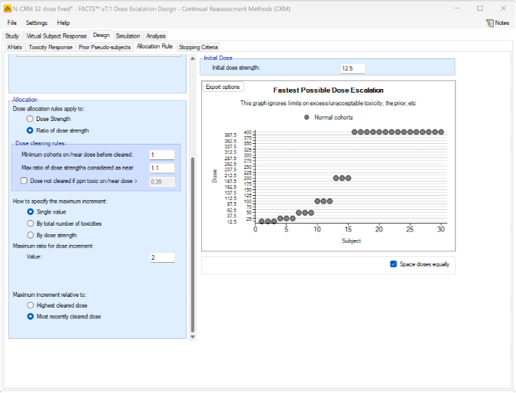
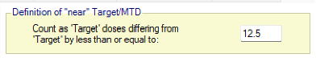
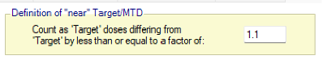
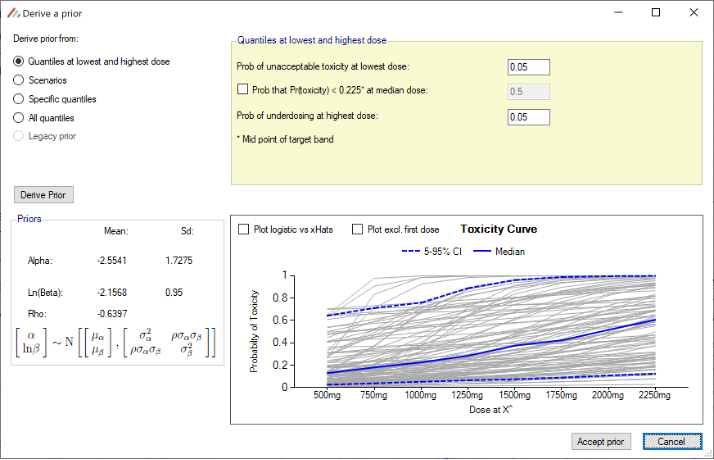
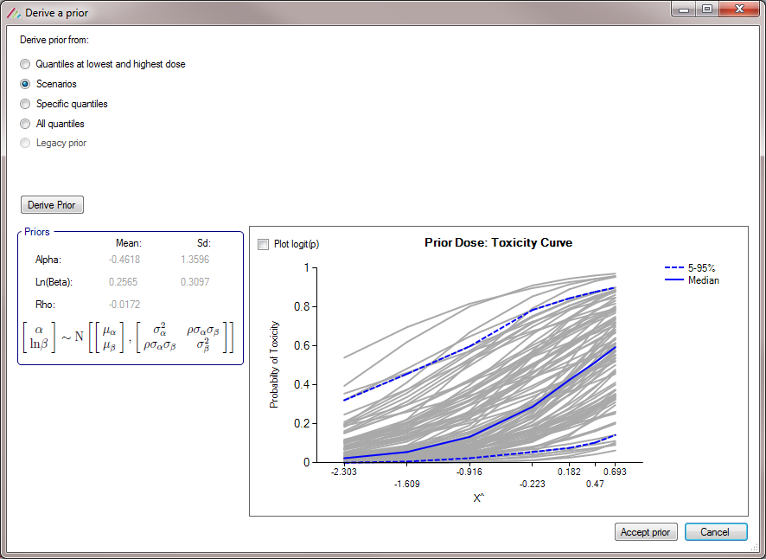

FACTS Dose Escalation CRM
CRM / N-CRM / BLRM (Bayesian Logistic Regression Model)
1 Introduction
1.1 Purpose of this document
This document describes how use the FACTS Dose Escalation (DE) CRM design engine. It is intended for all end users of the system.
1.2 Scope of this document
This document covers the FACTS Dose Escalation N-CRM design engine user interface.
This document does not address the internal workings of the design engines or algorithms, which are addressed in the associated Design Engine Specification. It also does not address the use of FACTS Core Designs or Enrichment Designs, which are covered in other User Guides.
The screenshots provided are specific to a particular installation and may not reflect the exact layout of the information seen by any particular user. They were taken from FACTS 6.3 and later installed on Windows 10. Different versions of Windows or the use of different Windows themes will introduce some differences in appearance. The contents of each tab, however, will be consistent with the software.
1.3 Context of this Issue
This document has been updated for the version 7.1 release of Dose Escalation FACTS.
1.4 Citing FACTS
If writing in LaTex and using Bibtex, if you wish to cite FACTS (thank you!), can we suggest the following:
@techreport{FACTS71,
author = {{FACTS Development Team}},
title = {{FACTS}: Fixed and Adaptive Clinical Trial Simulator},
year = {2024},
month = {12},
number = {Version 7.1},
type = {Computer Software},
institution = {Berry Consultants LLC},
address = {Austin, TX},
note = {https://www.berryconsultants.com/software/facts/}
}This will result in a reference that, for example in the APA style, will look like the following:
FACTS Development Team (2024). FACTS: Fixed and adaptive clinical trial simulator. Computer Software Version 7.1, Berry Consultants LLC, Austin, TX. https://www.berryconsultants.com/software/facts/.
1.5 Definition of Terms
Table 1 gives an overview of the acronyms and abbreviations used in this document.
| Name | Definition |
|---|---|
| Cap | A limit on the number of subjects recruited. In FACTS N-CRM users can specify a cap on the overall number of subjects to be recruited in the trial (the ‘Overall Cap’) and specify stopping rules to define when the trial should stop before it reaches cap. |
| Control | Is the treatment arm with which the novel treatment(s) are principally being compared. Control may be placebo, or some existing standard of care, or therapy, against which the novel treatment has to be benchmarked in order to determine its likely usefulness. |
| Core | FACTS Core: A mode of FACTS for designing trials where multiple treatments, (possibly different doses of a novel treatment) are tested against a control and optionally an active comparator. |
| CRM | Continual Reassessment Method – a dose escalation design where the dose-toxicity is estimated using a simple Bayesian model, and the resulting estimates used to control the dose escalation and estimate the Maximum Tolerated Dose (MTD). |
| DE | Dose Escalation: a mode of FACTS where subjects are treated in cohorts and dose escalation is determined by the number of toxicities observed. |
| ED | Enrichment Designs: a mode of FACTS for designing trials where the same treatment is testing in different settings for example different sub-populations or different but related indications. |
| FACTS | Fixed and Adaptive Clinical Trial Simulator. |
| Final Endpoint | The final value, or state, of a subject’s endpoint. |
| GUI | Graphical User Interface, the part of the FACTS application that the user interacts with. |
| Method | In the FACTS documentation we try to reserve the term ‘method’ for the algorithms used in the simulation (as opposed to the analysis) part of the program. In the analysis part we use the term ‘Model’, see below. |
| Model | In the FACTS documentation we try to reserve the term ‘model’ for the statistical models used in the analysis of the trial data (in the ‘design’ section of the FACTS user interface). Where mathematical algorithms are used for other purposes in FACTS (for instance in the generation of the simulated data) we try to use the term ‘method’. We have found that initially it is very easy for users to be confused between these two parts of FACTS and we feel that using distinct terminology may help to reduce this. |
| MTD | The dose most likely to be the Maximum Tolerated Dose (MTD) – the dose with the highest Pr(MTD). |
| MTD+ | The dose most likely to be the MTD+ – the dose with the highest Pr(MTD+). |
| Pr(MTD) | A dose’s probability of being MTD is the probability that it is the dose with the highest probability of having a toxicity rate in the acceptable toxicity band, and (if a threshold has been specified) does not have a probability of excess or unacceptable toxicity above the threshold. This estimate of MTD is constrained to select one of the available doses. |
| Pr(MTD+) | A dose’s probability of being the MTD+ is the probability that it is the dose with the highest probability of having a toxicity rate in the acceptable band, and (if a threshold has been specified) does not have a probability of excess or unacceptable toxicity above the threshold. Unlike Pr(MTD), Pr(MTD+) includes estimating whether a dose below or a dose above the range of those being tested is more likely to have a toxicity in the acceptable band than any of the doses in the range. |
| Profile | A profile is a specification of one aspect of a scenario. A scenario is made up of one profile of each of the required types for the type of trial being simulated. FACTS allows the user to specify multiple profiles of each type and then presents all the possible combinations of profiles as scenarios that can be used to drive simulations. |
| Response | The change in a subject’s endpoint compared to their baseline state. |
| Scenario | A scenario is the complete specification of the unknown external factors that determine the data observed on the trial and its timing. The exact factors depend on the type of trial being simulated but typically include: -) the distribution of the final change from base line, or probability of response or rate of events in the different treatment groups -) the properties of subjects’ early responses and the correlation with their final outcome -) the rate at which subjects are recruited into the trial -) the rate at which subjects drop out of the trial. |
| SPEC | The Design Engine Specification, describes the system algorithms, and meaning of parameters. |
| Response | The change in a subject’s endpoint compared to their baseline state. |
| Subject | Someone recruited onto a clinical trial for the purposes of learning about the properties of a treatment. Depending on the type of trial they might be patients or they might be healthy volunteers. |
| Treatment Arm | Subjects on entering the study are randomized to different ‘treatment arms’. Subjects randomized to the same arm receive the same treatment and the responses of the subjects in the arm analyzed to determine the expected response to that treatment, allowing the expected responses to the different treatments to be compared. |
| UG | The User Guide; describes how to use the system. |
2 FACTS Overview
This user guide assumes some limited general familiarity with FACTS and concentrates on describing the interface for designs using the N-CRM approach. See the FACTS Dose Escalation user guide for a general introduction to the FACTS Dose Escalation user interface.
The N-CRM is based on the method described in the paper (Neuenschwander, Branson, and Gsponer 2008). It is designed for use in oncology phase 1 trials, and we understand generally in use at Novartis for the majority of their trials of this type:
- Dosing starts at a (very) low dose, strongly believed to be safe.
- Usually after a cohort of subjects have completed their current dose, the dose to be used for the next cohort is selected. The selection of this dose is dictated by a combination of dose escalation rules, the estimate of the toxicity rate on the different doses and the target maximum tolerated toxicity, or toxicity band.
- The endpoint per subject is binary: toxicity observed or not.
- There is either a predefined set of doses to explore, or a dose range.
- There is limited sample size.
2.1 FACTS 7.1 Changes to N-CRM
In FACTS 7.1 there were new features added to N-CRM:
- It is now possible to backfill to the current escalation dose (also known as “frontfilling”).
- It is now possible to specify a third queue concept – maximum number of patients in their DLT period on the current MTD estimate.
- It is now possible to define the concept of “near” target/MTD as part of stopping rules, for both fine-grained and regular dosing.
2.2 FACTS 7.0 Changes to N-CRM
In FACTS 7.0 the only change was on the Analysis tab, when entering subject data manually, the FACTS GUI now ensures that a cohort number is entered for every subject.
2.3 FACTS 6.5 Changes to N-CRM
In FACTS 6.5 there was a new feature added to N-CRM:
- It is now possible to generate a design report – a Word document describing design - once the design has been simulated. In FACTS 6.5 there was two small changes to the functionality:
- When deriving toxicity/efficacy priors from quantiles at the lowest and highest doses, the “middle” probability option now refers to the median dose rather than the reference dose and is now optional. When pre-6.5 FACTS files are loaded in FACTS 6.5, the “middle” probability option will be ignored and replaced by 0.5.
- When deriving toxicity/efficacy priors from specific quantiles the specification of at least two dose levels is now required whereas previously the specification of at least three dose levels was required.
In FACTS 6.5 there were some improvements in the simulated behavior:
- Designs which include efficacy, the “Maximum cohorts used to determine MTD” parameter on the Allocation Rule tab is now observed, in FACTS 6.4 and earlier it was ignored.
- In N-CRM designs using open enrollment without accrual pausing, FACTS will now output entries in the cohort file for subjects that have been lost following stopping rules being met.
- In N-CRM designs using open enrollment, FACTS will no longer prematurely apply stopping conditions when there are still subjects whose outcomes have been observed, but not yet processed.
- In N-CRM designs using open enrollment, FACTS will now report the selected MTD/MED/OSD and associated state to be the dose where the stopping conditions were first met, unless the MTD has subsequently decreased post stopping rules being met. This is to prevent a dose above the one selected when the stopping conditions were met being reported as the MTD when it is very likely that there is insufficient data on this higher dose to justify its selection. If rather than reporting the MTD at the point when the stopping rules where met, you would like the trial to resume if the dose selected as MTD has changed (and this the stopping rules possibly no longer met), ensure that the ”Pause accrual and wait for completers” option is selected on the “Stopping Criteria” tab. This allows the trial to resume if the recruitment cap has not been met.
- FACTS Command Line mode and FLFLL (FACTS Linux File Loader Lite) now correctly handle the processing of N-CRM designs whose prior was derived using the “Legacy Prior” option.
2.4 FACTS 6.4 Changes to N-CRM
In FACTS 6.4 there were no changes to the Dose Escalation simulators.
2.5 FACTS 6.3 Changes to N-CRM
In FACTS 6.3 a number of changes were made to improve facilities in N-CRM, or improve the way existing facilities were implemented. These were:
- New run-in options: the existing run-in scheme is available as “simple run-in”, “custom run-in” allows a specific sequence of doses and number of subjects to test at each dose to be specified, “small cohort pre-escalation” allows a run that uses a smaller cohort size but follows the dose escalation rules and over dose control.
- New “backfill” options in open enrolment. Backfill allows subjects that become available at a time when they can’t be allocated to the current dose (because the maximum number of subjects without final results have already been allocated to the current dose).
- Improved handling of “maximum subjects without final results” in open enrolment. In earlier versions of FACTS this was a “global” maximum, which led to a suboptimal allocation pattern and overly cautious rejection of subjects that became available. The new model applies a maximum “per dose” so that once the trial has escalated to a new dose strength, any subjects without final results on lower doses do not block allocation to the new dose, in addition it is possible to specify two different maximums – one for when a dose has just been escalated to but has not been “cleared” (typically smaller and more cautious), and one when a dose has been cleared but we continue to allocate to it because it is the target dose (typically larger and more confident). This method is such an improvement that we recommend moving any design using open enrolment to this new version of FACTS.
- Improved Ordinal Toxicity model – the way the likelihood is calculated has been improved – reducing the uncertainty in the model fit. Any design using an ordinal model will need to re-calibrate the prior if you move the design to FACTS 6.3. If you have a design already complete, or in execution we recommend you remain using the earlier version of FACTS for that trial.
2.6 FACTS 6.2 Changes to N-CRM
In FACTS 6.2 features available separately in the other FACTS CRM engines (CRM (Toxicity), bCRM & CRM Ordinal) were all incorporated into N-CRM. This allowed these features to be used in conjunction with N-CRM’s target toxicity band methodology, overdose control and open enrollment features, as well as in conjunction with each other for the first time.
The new features are:
- From CRM (Toxicity) the option to specify that the data is coming from ‘two groups’ and for the toxicity experienced in the two groups to be modelled with a joint model [CRM 2 Sample]. This allows a trial where there are two patient populations (such as adults and children) or where there are two versions of the treatment to be simulated.
- From bCRM the option to model a second binary efficacy endpoint [bCRM] and the for dose allocation to proceed in two stages – the first to establish an MTD and the second to establish an MED.
- From CRM Ordinal the option for the toxicity endpoint to be modelled not as binary endpoint, but one with different categories of toxicity, and with a joint model applied to the different categories [CRM Ordinal]. The endpoint can be to model either 3 or 4 categories of toxicity:
- category 1 is “no toxicity”,
- category 2 is “mild toxicity”,
- category 3 is “toxicity”
- category 4 (if included) is “severe toxicity”
All decision making is made in terms of the probability of observing a category 3 (or worse) toxicity.
2.7 FACTS 6.1 Changes to N-CRM
In FACTS 6.1 N-CRM has the new feature of ‘design variants’ that allow the user to easily simulate and evaluate an N-CRM design at different sample sizes. This change includes 4 elements:
- Under the ‘Study’ tab the user can now specify the number of design variants, and for each variant the maximum study size in Cohorts.
- On the simulation tab FACTS will display a copy of each simulation scenario for each variant.
- The simulation results now include the Ppn of trials that stopped for each stopping reason: stopping because all doses are too toxic (the toxicity estimates exceed the overdose criteria), because a stopping rule was met or because the study cap was reached.
- There are now a set of cross variant graphs that show trellis plots of the key summary graphs by design variant and scenario.
3 N-CRM Dose Escalation Design Concepts
In an N-CRM dose escalation trial, subjects are exposed to the novel treatment at increasing dose strengths, not progressing to the next dose strength until lower doses have been shown to be sufficiently safe, and not progressing beyond the dose which appears to display the maximum tolerated rate of toxicity, or the target rate of toxicity, the “Maximum Tolerated Dose” (MTD). To limit the risk of exposing subjects to a new, higher dose strength, subjects are allocated in “cohorts’ of a given size and no further subjects are recruited until all the subjects in the cohort complete treatment and follow-up. To enroll subjects quicker and introduce further options to manage the risk of exposure at new doses, FACTS allows “Open Enrolment” of new subjects, which is a form of design that dispenses with cohorts and is described in this section.
Once all the subjects in a cohort have completed, FACTS updates its analysis of the dose toxicity, re-evaluates the dose-escalation rules and selects the dose the next cohort will be allocated to. As well as the final results of each simulated trial, each time a cohort completes FACTS outputs the data available and the results of the analysis. These are referred to as “cohorts files”, and when you run the simulations, you can specify for how many of them you want these additional files written out.
The design’s default behavior is to allocate the next cohort to the model estimated MTD, but this is typically modified by several user specified rules. Note that if all the rules are met, the allocation is to the model estimated MTD, it will never allocate above it.
The rules that are available to modify this behavior, to achieve “not progressing to the next dose strength until lower doses have been shown to be sufficiently safe” are:
- Starting dose: the dose strength to be allocated to the first cohort. (Specified on the Design > Allocation Rule tab)
- Overdose control: a limit can be specified on the probability that a dose’s toxicity rate is above a certain level, and any dose for which this is true is excluded from allocation. (Specified on the Study > Toxicity tab)
- Dose escalation rules: The size of the increase in dose strength from one cohort to the next can be specified (Specified on the Design > Allocation Rule tab).
- Single patient / small cohort run-in: a fixed dose allocation scheme can be specified, using a different (typically smaller) cohort size. That is applied without reference to any other rules or to the results of the analysis as long as no toxicities have been observed. If the trial includes what is thought to be a number of weak doses that are likely to have toxicity below the target rate, but are still required to be tested, using a run-in can make testing these doses cheaper and quicker.
In the sections to follow, we describe overdose control, dose escalation rules and run-in features in the conventional context of cohort enrolment and a limited number of possible doses. We also describe the options FACTS allows to model the subjects in the trial as belonging to 2 different groups and the options to simultaneously model an efficacy endpoint. We subsequently describe how these are modified if:
- there are many potential dose strengths in a certain range that could be, but don’t have to be, administered in the trial (“fine grain dosing”).
- we choose not to limit enrolment to cohorts but enroll subjects continuously (“open enrolment”).
3.1 Overdose Control
Overdose control can be specified on the Study > Toxicity tab. Overdose control specifies a limit on the probability that a dose has a toxicity rate above a certain level. After fitting the Bayesian logistic regression model, all doses for which the posterior probability that their toxicity rate lies above the specified level exceeds the specified limit are ineligible for allocation. Because the Bayesian Logistic regression is monotonic, this means that after every analysis either all doses are permitted for allocation or there will be a dose level above which no dose is permitted for allocation.
The overdose control is specified in terms of the “toxicity bands” (concept of allowing ranges for the target toxicity, excess toxicity, unacceptable toxicity and under-dosing explained in more detail in this section) and can either be in terms of the “excess and unacceptable toxicity bands” or just the “unacceptable toxicity band”. The “excess and unacceptable toxicity band” is every toxicity rate above the upper bound of the target band. Care should be taken when setting the permitted threshold for this joint band. If set below 0.5, it will likely exclude doses whose mean expected toxicity rate is within the target band with the risk that this makes the escalation decision in the design too cautious. Initially it might be recommended to just use the “unacceptable band” for specifying the overdose control. This allows an overdose control that is more strict – for example: “exclude any dose where the probability that the toxicity rate is above 0.6, is greater than 20%“. The lower bound for the unacceptable band can be set wherever desired, its only role is in defining this band for overdose control. It is also possible to specify that the limit changes over the course of the trial, allowing the overdose control to become stricter as more information becomes available. For example, one could reduce the permitted probability of a dose having a toxicity rate in the unacceptable band from 50% to 25% in steps of 2.5% after every cohort.
3.2 Dose Escalation Rules
The dose escalation could be solely controlled by the overdose control (as originally proposed in (Neuenschwander, Branson, and Gsponer 2008)), however this means that the escalation behavior is very dependent on the interplay between the prior and the observed data. Usually, teams prefer to have a fixed set of rules in place ensuring the escalation behavior is sufficiently cautious. FACTS has an option to just use overdose control or to use a combination of overdose control and a set of fixed escalation rules. In the latter case, the following rules can be set in the Design > Allocation Rule > Allocation tab:
We introduce the notion of whether a dose has been “cleared”. A dose is cleared once we have sufficient data on it (usually, but not necessarily, the results of one cohort, but if the cohort size is small, for example 2 subjects, perhaps more than one cohort will be required). This can be supplemented by a rule that if the observed raw toxicity rate at the dose exceeds a certain limit, then the dose is not counted as cleared (this rule is usually unnecessary if overdose control limits have been set). Once a dose has been cleared, it stays cleared, meaning there is “maximum cleared dose”. The number of dose increments or the factor of dose strength above the current cleared dose that can be allocated to is then specified. For example, with doses of 12.5, 25, 50, 100, 150, 200, 250, we might allow escalation at two dose increments a time. In the figure below, you see the combination of settings used to achieve this behaviour alongside the “Fastest Possible Dose Escalation” plot on the right:
Alternatively, we can specify the permitted escalation as a ratio, for example we might allow the dose strength to be at most tripled at each escalation, which, with the example dose strengths, makes the initial escalation more cautious:
The escalation rules can be adjusted so that instead of a single increment rule, there are different increments depending on the dose, or depending on the number of observed toxicities. To modify our earlier example, we can allow escalation by 2 dose levels while no toxicities have been observed, but limit it to only one dose level once one or more toxicities have been observed:
Lastly escalation can be relative to the highest cleared dose, or relative to the last dose allocated.
To summarize the allocation procedure:
- The current maximum cleared dose is identified.
- The current data is analyzed using the Bayesian Logistic Regression model.
- The overdose rules are evaluated and all doses exceeding the overdose control limit are excluded from this escalation selection.
- From the remaining doses, the dose best meeting the target MTD or target toxicity interval objective based on the model is selected as the “target dose” (TD).
- If the TD is at or below the current maximum cleared dose, the next cohort is allocated to the TD.
- If the TD is within the escalation rules of the current maximum cleared dose, the next cohort is allocated to the TD.
- Otherwise, the next cohort is allocated to the highest dose above the current maximum cleared dose as allowed by the escalation rules.
3.3 Initial Run-in
The purpose of defining a run-in is to define a fixed allocation behavior to be followed up to the first toxicity being observed. The specified number of subjects to allocate to each dose in the run-in and which doses to test are specified. This scheme is followed until a toxicity is observed or we reach the end of this fixed scheme.
Three forms of run-in specification are available:
- Simple: allocates a small cohort to every defined dose in ascending order (unless fine grain doses - see this section – have been specified, in which case the escalation rules are followed).
- Custom: allocates a defined number of subjects (possibly varying by dose) to selected doses in ascending order.
- Small cohort pre-escalation: allocates a small cohort, but follows the escalation rules assuming just a single small cohort is required to clear a dose.
All run-in schemes can be modified in a number of ways:
- Specifying a maximum dose at which the run-in stops if no toxicities are observed until that dose.
- If ordinal toxicities are being simulated, the run-in may should at the first observed category 2 toxicity (rather than a category 3 toxicity)
- Whether the subjects used in the run-in should be counted towards the trial sample size or not.
- When a toxicity is observed the standard behavior is to allocate to the minimum of: the last dose tested in the run-in, the current TD or the highest dose that can be allocated to by the overdose rules. This can be replaced by expanding the allocation on the current dose to make it a full cohort as specified in Study > Study Info tab (this option is particularly useful in conjunction with stopping for a category 2 toxicity).
3.4 Two Groups
FACTS has the option to model the subjects in the trial as belonging to two different groups, these can be either:
- Two groups distinguished by a baseline property of the subjects, for example adults and paediatrics.
- Two groups separated by a difference in treatment (and selected randomly), for example the study drug alone or in combination with an additional drug.
There are options for when group 2 starts enrolling:
- They can be recruited sequentially – group 1 then group 2.
- They can be recruited in parallel
- The second group can be started when the allocation to the first group reaches a particular dose
- The second group can be started when the number of subjects allocated to group 1 reaches a particular threshold.
A joint model is fitted to the two groups.
The first group is modeled:
\[ logit(p_{1j}) = \alpha + \beta \hat{x}_j \]
The second group is modeled:
\[ logit(p_{2j}) = (\alpha + a) + (\beta + b) \hat{x}_j \] With separate priors and some optional constraints on \(a\) and \(b\). Dose escalation and stopping are judged independently for the two groups.
3.5 Efficacy
FACTS has the option to additionally model an efficacy endpoint. There are currently two limitations in simulation:
- Only a binary efficacy endpoint can be simulated
- The efficacy endpoint is assumed to be available at the same time as the toxicity endpoint.
The efficacy and toxicity endpoints are modelled separately. There are options to specify early stopping rules for finding the MTD, and to specify a cap on the sample size that can be spent finding the MTD. Once these rules are met, then allocation is towards the Minimum Efficacious Dose (MED) – if this is below the MTD. If the estimated MED lies at or above the estimated MTD, the allocation is at the estimated MTD.
If while allocating to the estimated MED further toxicity results change the estimate of the MTD, and if there is now insufficient information on the MTD as specified by the early stopping rules for finding the MTD, allocation switches back to allocating to the estimated MTD, if the sample size cap for finding the MTD allows.
3.6 Fine Grain Dosing
In some settings, e.g. when the drug is delivered in solution by IV or when manufacturing allows any dose in a range from say 100mg to 400mg in steps of 10mg, dose strengths need not be restricted to just a small number of pre-defined levels. FACTS has a feature that allows this to be simulated, not with a continuous range of doses, but with “fine grain” dosing.
FACTS supports the specification of a range of doses from a minimum to a maximum with doses either equally spaced or spaced with equal ratio. Using dose ratio makes most sense it you want to use the dose strength whilst believing the effect will be roughly log-dose. Using dose ratios, it’s necessary to accept FACTS reporting dose strengths only close to those desired. As an example, if the main doses followed a dose doubling scheme: 12.5, 25, 50, etc., one might use fine grain dosing with dose space ratios of approximately the 4th root of 2 (1.1892). The resulting doses are 12.5, 14.865, 17.677, 21.022, 24.999, 29.729, 35.354, 42.043, 49.998, etc., which means there are three dose levels between each of the original doses.
There are two alternatives:
- Use nominal dose strengths 1, 2, 3, 4, … (i.e. assuming the dose spacing is linear in expected effect) and label the doses according to their actual strength.
- Use a fixed dose interval (e.g. 12.5 resulting in doses of 12.5, 25, 37.5, 50, 62.5, etc.) so the lower doses (of the original scheme) have fewer (or no) intermediate doses and the higher doses have many more. The dose escalation rules can be specified in terms of dose strength ratio to achieve the required escalation, for example allowing dose escalation with a dose strength ratio of 2 will result in the initial escalation using doses 12.5, 25, 50, 100, etc.
As well as possibly adjusting the dose escalation step size to accommodate the new dose levels on the Design > Allocation Rule tab, there are two other rules that may need modification:
To count a dose as “cleared”, we might now count cohorts on nearby doses to count towards the required clearing total. This is specified as the “Max ratio of dose strengths considered as near” (if dose allocation rules apply to ratio of dose strength) or “Delta in dose strength considered as near” (if dose allocation rules apply to dose strength) on the Design > Allocation Rule tab.
- For example, if we have doses at roughly 4th root of 2 intervals, we might count any dose within a ratio of 1.2 as “near” so that any cohorts allocated to immediate neighbor doses count towards clearing a dose.
- Alternatively, if we have doses every 12.5mg from 12.5 to 400, counting any dose within a ratio of 1.1 will mean that from dose 125 and above, immediate neighbor doses (within 12.5) count towards clearing a dose, and from dose 250 and above, doses within 25mg (two immediate neighbor doses) count towards clearing a dose.
The concept of “near doses” in fine grained dosing allows us to skip certain doses in the escalation phase, which might make sense if there is reason to believe that doses of similar dose strengths behave similarly and don’t provide enough additional information to justify assigning more cohorts to.
Figure 6: Doses from 12.5 to 400mg, with fixed spacing of 12.5. Showing dose escalation by dose doubling. When requiring a certain number of cohorts to have been allocated to the estimated MTD before the trial can stop / to allow the trial to stop, we might now count cohorts on doses near the estimated MTD as counting towards that total. This is set on the Design > Stopping Criteria tab. In considering which doses are near, the same logic as on the Design > Allocation Rule tab regarding Dose Strength or Ratio of Dose Strength will be used.
If Dose Strength is used, then on the Design > Stopping Criteria tab, we can include cohorts on nearby doses to count towards the required number of cohorts on the estimated MTD by specifying “nearby” in terms of dose strength. For example, by +/- 12.5 mg:
Figure 7 If ratio of Dose Strength is used then on the Design > Stopping Criteria tab, we can include cohorts on nearby doses to count towards the required number of cohorts on the estimated MTD by specifying “nearby” in terms of dose strength ratio. For example, by +/- 10%:
Figure 8
Note that with Fine Grain dosing, if a band is specified for a dose to count as cleared, then the maximum cleared dose will be the maximum dose within that band, and if incrementing relative to the Maximum cleared dose, then the maximum permitted increment will be relative to the maximum dose within the cleared band.
3.7 Open Enrollment
Open enrollment (Broglio et al. 2015) can be used instead of cohort enrollment. Cohort enrolment enrolls a fixed number of subjects to a given dose, then waits until their treatment and follow up is complete (so their final status – whether they suffered a DLT (Dose Limiting Toxicity) or not – is known) before deciding on the next dose to allocate to and then recruiting the next cohort. This likely means that subjects become available for inclusion in the trial, but have to be turned away as the trial waits for the current cohort to complete. Open enrollment attempts to address this by allowing subjects to be enrolled whilst the current “cohort” is completing. However, this may come with some risk – more than a cohort’s worth of subjects may now be exposed to a new dose before we have any estimate of its DLT rate. To allow this risk to be managed, open enrollment introduces two new concepts:
When allocating to an uncleared dose, a cap can be set on the number of subjects that can be allocated to that dose who have not yet got their final results (“OE cap 1”). For example, if this number is set to 3 (to be the same as a common cohort size), after 3 subjects have been recruited and allocated to the current dose, no more subjects will be allocated to this dose until at least one of these subjects has completed. Until then, potential subjects that become available will be turned away unless backfilling is enabled (see next point below). But unlike cohort enrolment, as soon as the first of the subjects on the dose completes, a subject that comes available could now be allocated to the dose, depending on further rules explained below (frontfilling) – unless of course that subject’s result has changed the estimated MTD. Note that the trial won’t escalate beyond the current dose until the required number of subjects to clear the dose have completed. By default, the trial won’t allocate more than the number of subjects required to clear the dose until the dose is cleared, meaning if 3 subjects are required to clear a dose and 3 subjects have been allocated to this dose, even when 1 or 2 of these subjects have their final results and a new subjects is enrolled, they won’t be allocated to this dose. If this is regarded as over cautious, it can be modified by enabling frontfilling, allowing 3 subjects without final results simultaneously. In the above example, this would mean we could place a fourth subject on the dose when the result of the first subject has come in and a fifth subject as soon as the result of the second subject has come in.
When the cap on the number of subjects without final results on an uncleared dose has been reached (“OE cap 1”) new potential subjects will be turned away, unless backfilling is enabled. Enabling backfilling allows these subjects to instead be included, allocating them to a lower dose that has already been cleared. Whilst such an allocation may not contribute as much to identifying the MTD as allocating to the current dose would, it can still contribute by:
- Increasing the information on the next lower dose can inform the estimate of toxicity on the current dose through the Bayesian logistic model.
- Providing additional information on a dose that it may be necessary to de-escalate too if the current dose turns out to be too toxic.
It can also contribute information on other endpoints (such as efficacy). Once backfilling has been enabled, it is also possible to enable frontfilling. For more information on backfilling and frontfilling, see this section.
Assume at a given point in time we want to allocate a subject to a specific dose, denoted by “candidate dose”. FACTS allows 3 different caps to be specified on how many subjects who have not yet got their final results (i.e. are not yet complete) can be allocated to this candidate dose:
- Maximum subjects without final results if dose is uncleared: As described early in this section, we encounter this cap during escalation when the candidate dose is not yet cleared. This cap takes into account subjects not yet complete on the candidate dose and any higher dose (“OE cap 1”).
- Max subjects without final results if dose is cleared and below MTD: We encounter this cap when the candidate dose is cleared and below the estimated MTD (which can happen if the estimated MTD is beyond the range of available doses, when backfilling, or when allocating during the efficacy phase of a toxicity plus efficacy trial). This cap takes into account subject not yet complete on the candidate dose and any lower doses (“OE cap 2”).
- Max subjects without final results if dose is cleared and at MTD: We encounter this cap when the candidate dose is cleared and the current model estimated MTD (which can happen when after clearing a dose we decide not to escalate, or after de-escalating) (“OE cap 3”).
3.8 Backfilling and Frontfilling
As described in the preceding section, Backfilling is the allocation of subjects to a lower dose when, due to restrictions, it is not possible to allocate a subject who comes available to the current dose (Dehbi, O’Quigley, and Iasonos 2021). FACTS provides a number of options to configure how backfilling behaves. Backfilling can be enabled in the Study > Study Info tab. The total sample size can be divided between the subjects allocated as part of conventional dose escalation and those allocated using backfill. When backfill is enabled, it is important to increase the total sample size and then limit the number that can be allocated using backfill, as subjects allocated using backfilling will not contribute to the escalation and the confirmation of the MTD and it’s usually important to retain sufficient sample size to achieve this aim.
When enabling backfilling, several options can be specified in the Design > Backfill Allocation tab.
- Two maximum caps can be specified on the number of subjects that are assigned in the process of backfilling to a given dose:
- an overall cap on subjects per dose that cannot be exceeded by backfill, counting also subjects that were assigned to that dose through regular allocation
- a cap on the number of subjects per dose that were allocated by backfill, counting only subjects that were assigned to that dose using backfilling.
- How many dose levels below the current dose can be allocated to when backfilling. Backfilling will always be to the highest dose possible (which might be the current dose if frontfilling is enabled, otherwise it will be below the current dose). Allocation to the next highest dose might be limited either by an open enrolment cap if there are already subjects allocated to that dose who have not yet completed, or it might be limited by the backfill caps described above. If allocation to the dose below the current dose is not possible, backfilling will by default look at the dose below that (two levels below the current dose) and so on. Using this option can ensure no backfilling happens to doses that are too far below the current dose.
- The lowest dose that can be allocated to when backfilling. This option is particularly useful when there is reason to believe doses below a certain level will not be effective.
- Whether frontfilling is allowed – frontfilling allows allocating more subjects to uncleared doses than the number required to clear that dose (see this section).
3.9 Open Enrollment, Backfilling and Fine Grain Dosing
When using open enrolment and fine grain dosing, the interval defined on the Design > Allocation Rule tab “Delta in dose strength considered as near +/-“, or “Max ratio of dose strengths considered as near” is crucial: it is used to define the range of doses where subjects allocated to any of them count towards clearing a dose.
- If dose allocation rules are selected to apply to “Dose strength”, the interval is defined “Delta in dose strength considered as near +/-“. Thus, for example, if this is set to 2, then subjects complete on doses with strength in the range 4-8 will contribute to the dose of strength 6 being cleared. At the same time, clearing the dose of strength 6 will automatically clear the dose of strength 8.
- If dose allocation rules are selected to apply to “Ratio of strength”, the interval is defined “Max ratio of dose strengths considered as near“. Thus, for example if this is set to 1.5, then subjects complete on doses with strength in the range 4-9 will contribute to the dose of strength 6 being cleared. At the same time, clearing the dose of strength 6 will automatically clear the dose of strength 9. These ranges also apply when assessing “OE cap 1-3”, and how many subjects have been allocated overall, or via backfilling. In backfilling, FACTS checks each dose strength and the doses in its “near” interval range, at (if frontfilling) or below the current dose, until the first dose strength is found where backfilling can take place.
4 Starting FACTS
FACTS is usually first started using the FACTS icon installed on the Windows desktop or from the Windows Start > Programs menu.
When the application opens, you are presented with the main introduction screen of FACTS (Figure 12). From here you can start designing an N-CRM trial, by double clicking N-CRM in the list of available designs, or by selecting the N-CRM design option from the File > New > Dose Escalation menu.
FACTS will also be associated the parameter files it writes out with a ‘.facts’ file extension. Clicking on any one of these files will automatically start FACTS with that file opened.
Note: Depending on your license, some design options may not be available.
From this screen a new design can be started by selecting the design type in the list and double clicking it, or clicking on the ‘create new’ button at the bottom of the list.
In the ‘Recent Work’ panel, the use can select from the list of most recently opened FACTS files, or from the list of directories where those files were located, opening the folder and selecting a FACTS file from there.
Once a FACTS design has been created, the appropriate FACTS design module can be launched by double clicking on the “.facts” file in Windows Explorer.
Once a specific type of FACTS design has been selected or an existing FACTS file opened, the FACTS GUI displays the tabs and parameters appropriate to that type of trial design.
5 The FACTS N-CRM GUI
The FACTS N-CRM GUI conforms to the standard FACTS GUI layout, with information and displays divided across various standard tabs (Figure 13).
- The Study Tab has sub-tabs for entering Study Information and specifying the Treatment Arms (doses) available in the study. This is where the user specifies the ‘given’ requirements, or constraints, of the trial to be designed.
- The Virtual Subject Response tab has sub-tabs for specifying Explicitly Defined response scenarios to simulate and loading External data files of simulated subject responses. This is where a set of different toxicity rates per dose are specified that should represent the expected ‘space’ of the expected dose-toxicity profiles for the compound being tested.
- The Design has sub-tabs for specifying the Allocation Rules, Stopping rule and Toxicity Response model. These are the design choices open to the trial biostatistician. The expected consequences of these design choices are estimated by running simulations of the trials using the various virtual subject response profiles defined.
- On the Simulation Tab, the user controls and runs simulations and can view the simulation results.
- On the Analysis tab, the user can use the design to analyze a specific data set and report the result of fitting the specified toxicity response model and the recommended dose for the next cohort.
Also on the menu bar, on the right hand side of the FACTS Window, is a button labeled “Notes”; clicking this button reveals a simple “notepad” window in which the user can maintain some simple notes that will be stored within the “.facts” file (see Figure 14 and Figure 15)
The notepad window comes with two further buttons: one to change the window to a free floating one that can be moved away from the FACTCS window; and the other to close it.
The Notes field can be used for any text the user wishes to store with the file. Suggested uses are: to record the changes made in a particular version of a design and why; and to comment on the simulation results. This will help when coming back to work that has been set aside, to recall what gave rise to the different version of a design.
6 The Standard FACTS Menus
6.2 FACTS Settings Menu
The “Settings” command menu allows the user to do 2 things:
- Set various FACTS options to local settings – see below for details.
- Reset the options based on the stored configuration file. This file, “config.xml”, will initially be installed during the FACTS installation process and is stored in the Windows “Program Files” folder, in the sub-folder where FACTS get installed.
- Change the stored configuration file. This command allows you to select a new configuration file and have FACTS copy it to the sub-folder within the Windows “Program Files” folder, where FACTS get installed so it becomes the new stored configuration file. This allows IT support to easily disseminate configuration changes.
- Enter a new or changed license key.
6.2.1 Set Options
The FACTS Options dialog allows the user to:
- Set and Test the connection parameters to access a compute grid for running simulations.
- Configure the version and location of R or R Studio that can be launched from within FACTS
- Select how gamma distributions are parameterized.
6.2.1.1 Grid Configuration
A grid compute facility for running simulations will only be available if your local IT services have set one up. If they have done so, they
- May have already set the appropriate parameters In the FACTS configuration file included with the FACTS installation files.
- Inform you of the parameters to be set manually via this dialog
- Send a new configuration file that can be installed using the “Load Options” menu command.
If modifying the grid options manually, select the “Options” menu command and enter the values on the “Grid Configuration” tab of the displayed dialog window.
First select the type of interface to the grid to be used, this is either:
- Via a network shared drive (with a “sweeper script” running on a client machine to transfer jobs to the grid management system and return results from it).
- Via a web service system using a webserver and database to communicate to a grid management system. The IT group supporting the grid should be able to tell you which interface they have implemented, if any. If access to the grid is via a Network Share it is necessary to specify:
- The location of the network share folder, usually in the form \<server name>\<folder name\>.
- Whether the grid client is running Windows or Linux (so end-of-line characters can be corrected)
- The listener delay – this is the interval between “looks” when FACTS is waiting for simulation results to be complete
Once specified it is possible to use the “Test” button to check that the Network Shared folder is accessible and writeable.
If access to the grid is via a web service:
- The location of the web service endpoint.
Clicking on “Test Configuration” and will cause FACTS will attempt to connect to the FACTS grid controller. The control will show which components of the connection are working.
See the FACTS Installation Guide and FACTS Simple Grid Interface Guide for more details of setting up a grid.
6.2.1.2 R Configuration
In FACTS on the Simulation tab there are two controls that launch R – “Open in R” and “ Design Report” (in FACTS 6.2.0 the latter only available for FACTS Core designs).
To enable these to work the user must specify where the R or RStudio executable is installed and (if there is more than one version of R installed) which version of R to use.
The dialog allows the user to Add, Edit, Test and Remove links to versions of R.

Clicking on “Add” opens a normal Windows directory browser window, the user must navigate to the location of an R installation (for example “C:\Program Files\R\R-2.15.2\bin”, select the file R.exe, and click “Open”. This adds a new entry on the R configuration dialog.
Clicking on “Edit” operates similarly to “Add” above, except the selected location replaces that currently selected entry on the R configuration dialog rather than adding a new one.
Clicking on “Test” checks whether the currently selected entry on the R configuration dialog is available, if it is not an error dialog is displayed:

Clicking on “Remove” removes the currently selected location on the R configuration dialog.
The version of R to use by default is selected by clicking on the ‘Active’ check box of the version to use.
6.2.1.3 Gamma Distribution Parameters
In FACTS a number of parameters require inverse gamma distributions to be specified as priors for the parameter value. There are two different parameterization of the inverse gamma provided so that the user can select the form they find the most intuitive.
The first form uses parameters that are the mean of the distribution and the equivalent weight in terms of the equivalent number of observations. The second form uses an ‘Alpha’ and ‘Beta’ parameterization that some statisticians are familiar with and will find natural to use.
6.2.2 Enter a license key
If a new license key is required, this command can be used to enter one. There are two ways of entering a new license:

The key can be entered directly, along with the associated Organization name, or by selecting a supplied license file.
7 The Study tab
7.1 Study Info
The Study Info sub-tab provides parameters for specifying:
- Whether the trial has an Efficacy endpoint as well as a Toxicity one.
- Whether recruitment is in Cohorts or uses Open Enrolment,
- Whether the trial data is being analyzed as a single population (single group) or two groups (which could be 2 different patient types, or 2 different treatment types).
- The option to specify that the trial should include an expansion cohort once the MTD has been identified.
- The option (if using open enrolment) to specify the use of backfill.
Including an efficacy endpoint – this allows the trial to include a binary efficacy outcome that is observed at the same time as the toxicity endpoint. Once the MTD has been sufficiently determined further cohorts are allocated to determine the MED (Minimum Effective Dose) as long as that is below the MTD, until the maximum sample size or MED stopping rules have been reached.
Cohort versus Open enrolment: cohort enrolment is the standard way of running a phase 1 trial, a cohort of subjects of pre-determined size are treated at the current dose and the trial pauses until all the subjects in the cohort are complete, then the dose for the next cohort is determined. A phase 1 trial using Open Enrolment recruits ‘all comers’ with a cap on the number of subjects who can be treated but have not yet had a final result. Subjects that arrive whilst this cap has been reached are deemed to be ‘lost’ to the study.
If Open Enrolment and Efficacy Endpoint options are being used together, then subjects who arrive who cannot be allocated to the MTD (because the cap number of subjects awaiting a final result has been reached), can be allocated to the MED (as long as that is below the MTD).
If the trial is analyzing 2 Groups then a joint statistical model is used with options to constrain the group 2 difference in the intercept term to be +ve or -ve, and options as to whether a common or separate estimates of the slope term are used.
If an expansion cohort is included, the this is a single cohort (or one per group, if 2 groups is being used) typically much larger than used during the dose escalation, that is assigned at the end of the study to the target dose. FACTS simulates the results that arise from this cohort and a final analysis.
If open enrolment is being used, the further option to use backfill becomes available. The parameters on this tab for backfill, are to specify the maximum number of subjects that can be allocated for escalation, and the maximum that can be allocated in backfill. These two maximums should not total less than the overall “Max subjects” that can be enrolled. If adding backfill to a trial, usually the previous “Max subjects” becomes the “Max study allocation for escalation”, and an additional sample is allowed for backfill and added to the overall Max subjects.
If the trial has two groups the backfill maximums are the sum of the subjects in the two groups.
For Cohort enrolment, the parameters are:
- Maximum Study Size, in cohorts: the maximum number of cohorts the trial can use, though designs can include conditions that cause them to stop earlier.
- If the trial has two groups, the maximum number of cohorts of the second group.
- Cohort size: The number of subjects in each cohort. The maximum sample size for the trial is simply: Max Trial Size (cohorts) * Cohort Size.
- Cohort information delay: Normally left at zero, this allows for the trial to be simulated with cohorts recruited more quickly than if waiting for the last cohort to complete before treating the next cohort. This allows the trial to complete in shorter time, but is likely to lead to a larger incidence of toxicities. If the delay is set to 1, the second cohort will be recruited before the results for the first cohort are available, the third cohort will be recruited after the results of the first cohort are available but before the results for the second cohort are available, and so on.
- Execution rate: the time taken to recruit, treat and complete the observation of each cohort (in weeks). The value of this parameter does not affect the behavior of the simulations, but it allows a nominal “duration” of each simulation to be calculated. Unlike other FACTS simulations, this duration is not simulated stochastically, it is simply the number of cohorts * this duration. Its purpose is to give a figure to compare with open enrolment designs of the same trial.
If rather than Cohorts, subjects are recruited using open enrolment, the parameters are:
- Max subjects: the maximum number of subjects who can be recruited into the study.
- Time unit – this is a text string that will change the “units” label for time on graphs. This allows data to be more easily entered when the natural time unit is not “weeks”, but “days” or “months”.
- Mean recruitment rate: for simulation purposes this is the average number of subjects who will be expected to be available for recruitment during each time period. Recruitment is simulated using a standard Poisson process.
- Time until final result: the time for each subject for their final result to become available. This is simulated as a fixed length of time that is the same for all subjects.
- Maximum subjects without a final result: the cap on the number of subjects on the current dose or a backfill dose (if backfill is enabled) who can be recruited but not yet completed. This is also known as the ‘maximum queue length’. Subjects arriving and available for recruitment while the number of subjects on this dose who have been treated but have not yet completed is at this maximum, are dropped and assumed no longer available for recruitment. Once the current subjects complete the study has to await further new subjects to become available. There are three caps:
- Maximum subjects without final results if the dose is uncleared. This allows the design to be cautious when a new dose is used for the first time.
- Maximum subjects without final results if dose is cleared and below MTD. This allows a larger number of subjects without final results to be recruited at backfill doses or at the current escalation dose if backfill to the current escalation dose (“frontfilling”) is enabled, or at the MED in the efficacy phase of a trial that includes an efficacy endpoint.
- Maximum subjects without final results if dose is cleared and at MTD. This allows us to be more cautious if the model thinks all doses are toxic or if we are allocating at the model MTD and don’t want to expose too many subjects.
- Backfill – this can be enabled. Backfilling is the allocation of subjects to a dose below the current target dose, if the number of subjects allocated to the current target dose without final results has reached the maximum. Further parameters for backfill are set on the “Backfill” tab under the “Design” tab. On this tab, if backfill is enabled, two sub-maximums can optionally be specified:
- the maximum number of subjects who can be allocated as part of usual allocation for escalation and MTD determination (and MED if efficacy is included in the trial),
- and the maximum number of subjects who can be allocated as part of “backfill”.
Groups: a trial can be analyzed as a “single group” or as “two groups”. If analyzed as a single group, then all subjects are assumed to be the same and treated the same (except for the difference in the dose strength). If analyzed as two groups this allows either:
- The subjects can be simulated as coming from two similar but distinct groups such as: adults and children, first line or recurrent, having some concomitant treatment or not. The separation into the two groups is based on some property of the subject.
- Or the subjects can be simulated as having been allocated (possibly randomized) to one of two versions of the treatment, with the same rang of dose strengths and differing in some other way such as dosing schedule, treatment duration or combination with an additional treatment. The separation of the subjects into the two groups is under the control of the protocol.
In either case the same analysis options are available (hence we use the generic term “groups” to describe this feature).
If enrolment is by cohort, the there are two separate “maximum study sizes” in cohorts – one for each group.
The Group 2 recruitment, while it overlaps in time with the Group 1 recruitment, is simulated as being in lock-step and the recruitment of the cohort in each group is concurrent and analyzed when both are complete. In the ‘cohorts.csv’ files that are output, the cohort numbers indicates which cohorts were concurrent. The options are:
- To recruit group 1 first then recruit group 2 only when group 1 is complete.
- To start recruiting both groups in parallel from the outset.
- To start recruiting group 2 once group 1 has reached a specified dose. The first group 2 cohort is recruited in parallel with the next group 1 cohort after the first group1 cohort has been allocated the specified dose (if cohorts can be accrued before the cohort before has completed, the group 2 is accrued too – it does not wait until the group 1 cohort completes unless the next group 1 also waits).
- To start recruiting group 2 once group 1 has recruited a specified number of subjects. The first group 2 cohort is recruited in parallel with the next group 1 cohort after the specified number of subjects had been recruited into group 1.
If enrolment is open then there are options similar to the cohort enrolment to control when enrolment into group 2 starts:
- To recruit group 1 first then recruit group 2 only when group 1 is complete.
- To start recruiting both groups in parallel from the outset.
- To start recruiting group 2 once group 1 has reached a specified dose. The first group 2 subject can be recruited after the first group1 subject has been allocated the specified dose.
- To start recruiting group 2 once group 1 has recruited a specified number of subjects. The first group 2 subject can recruited after the specified number of subjects had been recruited into group 1.
But in addition the user specifies the maximum number of subjects in Group 2 and how the recruitment is to be simulated:
- With the group membership a property of the subject – along with a mean recruitment rate for group 2.
- With subjects randomized between the two groups (the randomization is fixed at 1:1).
The user specifies the three “Maximum subjects without final results …” for the second group.
If backfill is enabled, the backfill totals apply to the total of the subjects on both groups.
Enable Final Expansion Cohort: if this is enabled a final cohort of specified size will be allocated the dose selected as MTD at the end of the N-CRM phase of the study:
- If the study includes a control arm, the number of subjects in this expansion cohort to be allocated to control is also specified.
- If the study has two groups, two separate expansion cohorts will be allocated, their sizes are set separately.
- If the study includes observing efficacy then the target dose can be changed from MTD to MED or OSD.
Simulating an additional efficacy outcome is simply specified by checking the “include efficacy” checkbox.
Simulating an efficacy endpoint can be combined with all the other features (two groups, open enrolment, backfilling) already discussed, as well as with ordinal toxicity and fine grain dosing that are described below.
Currently there are two significant limitations to the simulation of an efficacy endpoint:
- The endpoint is assumed to be dichotomous.
- The endpoint is assumed to be observable at the same time as toxicity.
We hope to lift these restrictions in a later version of FACTS.
7.2 Toxicity
The Toxicity sub-tab provides parameters for specifying:
- Whether toxicity should be simulated as dichotomous or ordinal. If simulated as Ordinal, toxicity can be simulated as a 1-3 scale or 1-4 scale. In both cases ‘1’ is “no-toxicity”, 2 is “mild toxicity” and 3 is the toxicity of interest (from the point of view of defining the MTD, target toxicity band and Overdose Control. If a four category scale is selected, 4 is “sever toxicity” or death. Choosing whether to model the ordinal response is a separate option and is present on the Design > Toxicity Response tab.
- Type of target: this allows the user to specify whether the dose selection targets “the dose who’s estimated toxicity rate is closest to a specified target rate” or “the dose with the highest posterior probability of having a toxicity rate in a target band”. The former is the target rule used in the original CRM papers ((O’Quigley, Shen, and Gamst 1999), (deMoor et al. 1996), and the latter rule was introduced in (Neuenschwander, Branson, and Gsponer 2008).
- Toxicity target (only displayed if the type of target is “a single dose”): this allows the target toxicity rate to be specified and whether the target dose is the one nearest, the one nearest but with a lower rate or the one nearest but with a higher rate.
- Target: this panel allows the target toxicity bands to be specified along with overdose control limits. The panel is displayed and enabled even if the target type is “a single dose” to allow overdose control limits to be specified.
- Type of Target: controls the selection of the dose for the next cohort – this can be to target a single dose (to replicate the original CRM behavior, see this section) or to target the dose with the highest probability that its toxicity rate lies in a target band.
7.2.1 Targeting a Toxicity Interval
Targeting a toxicity band or interval is an innovation introduced with the N-CRM design, unlike other CRM designs that select the dose that is expected to have a toxicity response closest to the desired tolerated limit, the N-CRM selects the dose that has the highest posterior probability of having a toxicity rate in a target toxicity band. This has the advantage of a) having a clearer probability statement and b) having in addition probability statements about the probability of under and overdosing (the toxicity rate being below or above the target toxicity band).
- The uncertainty in the estimate of toxicity at each dose is expressed by calculating the posterior distribution of the estimate of the rate of toxicity at each dose and calculating the proportion of that distribution that falls in to each of 4 bands of toxicity: ‘Under-dosing’ (toxicity so low that it is likely that a higher dose could be used), ‘Target’ toxicity (we want to select doses whose toxicity rate is most likely to be in this band), ‘Excess’ toxicity (toxicity higher than desired) and ‘Unacceptable’ toxicity.
- Under-dosing: this band always starts at 0.0; the user specifies the upper bound.
- Target band: this band always starts at the upper-bound of the under-dosing band; the user specifies the upper bound.
- Excess toxicity: this band always starts at the upper-bound of the target band; the user specifies the upper bound.
- Unacceptable toxicity: this band always starts at the upper-bound of the target band, with an upper bound of 1.0. The graph shows the width of the different bands using a simple, fixed, example posterior probability distribution of a toxicity rate.
- Intervals are relative to control: if a control arm is included in the study, then toxicity bands can be defined as the difference in toxicity rate relative to control. Negative differences (a lower toxicity rate than control) are always treated as under-dosing. To enable this option it is necessary to first go to the Study > Treatment Arms tab and select Include Control.
- Limit max excess/unacceptable toxicity: the ‘overdose control’ in terms of a maximum allowed posterior probability that a dose’s toxicity rate lies in either the ‘Excess’ or the ‘Unacceptable’ toxicity bands. Any dose with a posterior probability of having a toxicity rate in either of these two bands that is higher than the specified limit, cannot be selected for allocation to the next cohort, nor selected as MTD at the end of the study (this gives rise to slightly different results compared to those in (Neuenschwander, Branson, and Gsponer 2008) where the overdose control was not applied to final selection).
- It is possible to have the overdose control limit vary with the number of cohorts allocated. In particular this can be used to reduce the overdose limit as the number of cohorts (and the amount of information) grows. For example for a particular prior and final level of overdose control, it may be that initial escalation is excessively constrained, one way to allow early escalation in this setting is to use these parameters to allow an higher initial overdose control limit and gradually reduce it over time to the final desired limit. Tuning the parameters will require some iteration and simulation. A varying limit is specified by the specifying amount to change the limit by per cohort and the final limit. The amount to change by is always entered as a number in the range (0,1), whether this is an increment or decrement depends on whether the target limit is greater or less than the initial limit. Leaving the change in limit at its default of 0 means the limit does not vary.
- Limit max unacceptable toxicity: as for the previous parameter, but here the overdose control is only in terms of the posterior probability that a dose’s toxicity rate lies in the ‘Unacceptable’ toxicity band.
- As or the limit on excess/unacceptable toxicity it is possible to have the overdose control limit vary with the number of cohorts, see the description above.
7.2.2 Targeting a single dose
It is possible to use the N-CRM design engine with a conventional CRM allocation strategy - to “allocate to the nearest / highest dose below the maximum tolerated toxicity”; this allows conventional CRM design to be simulated with some of the additional features of N-CRM:
- Overdose control
- Estimate both parameters of the 2 parameter logistic
- The “Recommender” to analyze a specific data set.
The target is calculated by:
- In the MCMC sampling loop finding the dose that meets the target criteria, a doses probability of being the target is then the proportion of times that dose meets the target criteria across the MCMC sampling.
- Rather than selecting the dose with the highest probability, the dose at the 50% quantile is used. The cumulative probability of being the target is calculated over the doses in ascending dose strength, and the dose when the cumulative probability passes 50% is selected. This addresses some problems that can arise when very little data is available: that the dose with the highest probability is at one end of the dose range, but that probability is not that high, or that doses are not evenly spaced and a dose close to both its immediate neighbors may never have greater probability than both of them.
Setting the Type of Target option to Target a single dose, modifies the tab thus:
When targeting a single dose FACTS allows the user to specify:
- The target toxicity rate
- Whether to allocate to the dose with the mean estimate of its toxicity rate nearest the target, highest dose with a mean estimate of its toxicity rate below the target or lowest dose with a mean estimate of its toxicity rate above the target.
- An option to use the toxicity rate relative to control, rather than the default of the absolute toxicity rate. To enable this option it is necessary to first go to the Study > Treatment Arms tab and select Include Control.
The definition of the boundaries of the toxicity bands is still included in order to allow the specification of overdose control limits. These are calculated and applied in exactly the same way as when targeting a toxicity interval.
7.3 Efficacy
If include efficacy has been checked on the Study Info tab, a simple additional input page is included:
If simulating and modelling an efficacy endpoint is included there are two items to be specified on this tab:
- Whether a subject experiencing a toxicity can also count towards efficacy or not. If unchecked patients outcomes are simply sampled separately and a patient can both have a toxicity and an efficacy response. If checked, a patient’s toxicity outcome is sampled first, and only if there is no toxicity is an efficacy outcome sampled.
- The efficacy target – this consists of:
- The target efficacy rate required for the Minimum Efficacy Dose (MED).
- Whether the target dose is the nearest dose to the MED rate, the lowest dose above the MED rate or the highest dose below the MED rate.
- If a control arm has been included, whether the target rate is absolute or relative to the observed rate on the control arm.
7.4 Treatment Arms
On this tab the number of treatment arms (doses) available to the study is specified. The user can either define a set of specific doses that can be used or a continuous dose range with some granularity.
Selecting Explicit Doses allows the user to specify the specific doses that can be used on the trial:
- A single new dose or multiple doses can be added either by clicking “Add” or “Generate”. Initially each dose is defined by a simple integer name and level. The dose levels and dose names can then be edited on by clicking on them and entering the desired value. The dose level can also be set later on in the Design > Toxicity Response tab.
- There is also the option to include a control arm. Including a control arm allows the toxicity rate to be relative to the control arm.
7.4.1 Finely Spaced Doses
Selecting Finely Spaced Doses allows the user to specify the dose range that can be used on the trial:
- The minimum and maximum dose strength to be used
- The ‘granularity’ of the actual dose used, either as a fixed delta (Fixed spacing) or a dose ratio (the ratio specified must be greater than 1) (Ratio spacing).
- The number of ‘bins’ or ‘doses for which to report’ – this is because FACTS will still produce summary statistics in columns, many with a “column per dose” – it is possible to use more doses than it is practical to report on (and a limit in MS Windows of 32K pixels for the width of a table means that the GUI can only display simulation results for a maximum of ~40 doses). However this limitation is only for reporting summary statistics; the dose strengths modeled and allocated in the simulations are unaffected.
Selecting ‘Finely Spaced Doses’ will also affect how some of the other parameters are specified in the FACTS GUI.
7.5 Variants
On this tab the user can specify that a number of design variants should be created. Currently the only design feature that can be changed is the sample size (maximum number of cohorts).
If “multiple variants” is checked then the user can specify that simulations setups should be created for each simulation scenario with versions of the design with different maximum numbers of cohorts.
The user enters the number of variants they wish to create. Then in the resulting table, enter different “Max Cohorts” for each variant.
These will then appear on the simulations tab.
If open enrolment is being used, then the enrolment cap is specified by the number of subjects.
If there are two groups then separate caps are specified for each group.
8 Virtual Subject Response
The Virtual Subject Response tab allows the user to explicitly define virtual subject response profiles. When simulations are executed, they will be executed for each specified profile.
Profiles can be specified in 3 different ways:
- Explicitly: by specifying the toxicity rate to simulate at each dose. This option is only available if the available dose strengths have been specified explicitly, it is not available if a finely spaced dose range defined.
- Parametrically: by selecting one of the four models and specifying the parameter values for the model, allowing the toxicity rate to simulate at each dose to be calculated.
- Externally: by specifying a file of simulated subject responses at each dose strength, which will be sampled from with replacement when simulating subject responses. As in N-CRM there is a simple, single binary toxicity response per subject and there is no response profile that cannot be specified by the other methods. The mechanism is provided here more for consistency with the other FACTS interfaces.
8.1 Explicitly Defined
Toxicity profiles may be added, deleted, and renamed using the table and corresponding buttons on the left hand side of the screen in Figure 35. The user enters the toxicity rate to simulate at each dose into the Probability of Toxicity column of the table, and the graphical representation of these toxicity values updates accordingly.
This form of toxicity profile is not available if the dose range is “finely spaced” – typically this means there are too many doses for it to be practicable to enter toxicity rates for all of them. When using “finely spaced” doses the toxicity rates to be simulated have to be specified using parametric models (see the next section).
If the design is using ordinal toxicity, the toxicity response rates can be specified either:
- On the “Toxicity” tab by specifying the category 3 or greater toxicity rate at each dose and then two offsets – one for the category 2 or greater rate and one for the category 4 rate.
- On the “Ordinal Toxicity” tab by separately specifying the toxicity rates for each category of toxicity at each dose.
Specifying offsets: to ensure that the specified category 3 rate plus the category 2 offset doesn’t sum to more than 1, or the category 3 rate plus the -ve category 4 offset sum to less than 0, the offsets are applied to the logit of the category 3 toxicity rate.
Thus for the category 2+ rate:
\[ ln(\frac{p_{2+}}{1-p_{2+}}) = ln(\frac{p_{3}}{1-p_{3}} + \Delta_2) \]
where:
- \(p_{2+}\) is the probability of observing a category 2 or greater toxicity at a dose
- \(p_3\) is the probability of observing a category 3 or greater toxicity at a dose
- \(\Delta_2\) is the difference in the log odds between the two probabilities
The offset is defined at the lowest dose and highest dose and then varied linearly with dose strength at the intermediate doses. The plot of the curve can either use Pr(Tox) or Log-odds(Tox) as the y-axis and dose strength or log(dose strength) as the x-axis. A graph is displayed of the toxicity rates that have been entered, and the category 2+ and category 4 toxicity rates if applicable. This graph, as with all graphs in the application, may be copied to the clipboard or to a file using the “right-click” menu.
8.1.1 Explicitly defined – Ordinal Toxicity
If simulating ordinal toxicity an alternative option is to explicitly specify the rate at each toxicity level at each dose. This can be done under the Virtual Subject Response > Explicitly Defined > Ordinal Toxicity tab.
8.1.2 Explicitly defined toxicity – when simulating 2 groups
If simulating toxicity as a binary outcome, when simulating 2 groups, the tab displays two Pr(Tox) columns, one for each group, and the user enters the toxicity rate to be simulated at each dose for each group.
If simulating 2 groups and ordinal toxicity, then on the explicitly defined tab once again the tab displays two Pr(Tox) columns, one for each group, and the user enters the toxicity rate to be simulated at each dose for each group. As for a single group the Category 2 toxicity and Category 4 (if using) toxicity rates are defined by defining log odds offsets at the lowest and highest dose. Specification is limited to a single set of offsets that are applied to both groups.
As in the single group case in addition to the Category 3 toxicity rates that are editable, columns showing the Pr(Tox 2+) and Pr(Tox 4) are shown, but these are not editable and derived from the Pr(Tox) rates and the offsets that have been specified. The ordinal toxicity rates are only shown for group 1.
8.1.3 Explicitly defined – Ordinal Toxicity with 2 groups
If simulating ordinal toxicity an alternative option is to explicitly specify the rate at each toxicity level at each dose. This can be done under the Virtual Subject Response > Explicitly Defined > Ordinal Toxicity tab.
8.1.4 Efficacy response profiles
Entering efficacy response profiles is very similar to entering toxicity profiles. FACTS will construct scenarios to simulate of every combination of toxicity and efficacy response profiles.
8.1.5 Explicitly Defined – Efficacy
Efficacy profiles may be added, deleted, and renamed just like toxicity profiles. The user enters the efficacy rate to simulate at each dose into the Probability of Efficacy column of the table, and the graphical representation of these efficacy values updates accordingly.
As with toxicity this form of efficacy profile is not available if the dose range is “finely spaced” – typically this means there are too many doses for it to be practicable to enter efficacy rates for all of them. When using “finely spaced” doses the efficacy rates to be simulated have to be specified using parametric models (see the next section).
8.1.6 Explicitly Defined – Efficacy with two groups
If the design included 2 groups, when explicitly defining an efficacy response profile, there is simply a second column of efficacy response rates to enter:
8.2 Parametric
Toxicity scenarios may be added, deleted, and renamed using the table and corresponding buttons on the left hand side of the screen. The user selects the model to use to determine the toxicity rate to simulate at each dose, and specifies the values of the model’s parameters. The graphical representation of these toxicity values updates accordingly.
The graph may be copied using the context menu functionality described in the previous section.
Four models are available:
Logistic: the probability of toxicity at dose x is given by: \(P_x=\frac{1}{1+e^{-s(x-x_{50})}}\) with user specified parameters, \(s\) (slope) and \(x_{50}\) (the ED50 dose). Note this can be fitted exactly by the two parameter logistic with linear effective doses \(\hat{x}=x-x_{ref}\) when \(\beta=s\) and \(\alpha=\beta*(x_{ref}-x_{50})\)
Emax: the probability of toxicity at dose \(x\) is given by: \(P_x=\frac{x}{x+x_{50}}\) with user specified parameter \(x_{50}\).
Log Logistic: the probability of toxicity at dose \(x\) is given by: \(P_x=\frac{1}{1+e^{-s(ln(x)-ln(x_{50}))}}\) with user specified parameters, \(s\) (slope) and \(x_{50}\) (the ED50 dose). Note this can be fitted exactly by the two parameter logistic with log effective doses \(\hat{x}=ln(\frac{x}{x_{ref}})\) when \(\beta=s\) and \(\alpha=\beta*ln(\frac{x_{ref}}{x_{50}})\)
Piecewise linear: with the probability of toxicity specified at a series of knots, with the probability linearly interpolated between knots.
If Ordinal toxicity is being simulated then the category 2 and greater toxicity rates and category 4 toxicity rates are specified using the logit offset methods as on the Explicitly-Defined > Toxicity tab.
If Ordinal Toxicity and 2 groups are being simulated then both the Cat 2+ and Cat 4 toxicities and the Group 2 toxicities are defined using the logit offset methods.
8.2.1 Parametric efficacy response
Parametric efficacy response profiles function exactly like toxicity profiles, with the same parametric models to choose from and if 2 groups are present the response of the second group is again defined by 2 log-odds offsets, one at the lowest dose and one at the highest.
8.3 External
Subject response data may be simulated from a PK-PD model in place of, or in addition to, choosing a response model from FACTS. The importing of subject response data (which must be in the form specified in the System Requirements Document) may be done from the External Files sub-tab depicted below (Figure 46).
The supplied data should be in the following format: an ascii file with data in comma separated value format with the following columns:
- Patient id
- Dose index (1, 2, 3,… if a Control is to be included it should be index 0) this is not the user settable dose name or dose level
- Toxicity (0,1)
- Efficacy (0. 1) even if efficacy not being simulated this value must be present
- Group (*1, 2) only required if groups are being simulated
The GUI requires that the file name has a “.dat” suffix.
Simulated subjects will be drawn from this supplied list, with replacement, to provide the simulated response values.
To import an external file, the user must first add a scenario to the table. After adding a scenario, the user must click “Browse” to locate the externally simulated data via a standard file browser dialog.
9 Design
The Design Tabs allows the user to specify the toxicity response model, efficacy response model if an efficacy endpoint is present, any prior / pseudo patient data, allocation rules, and stopping criteria.
In the N-CRM the toxicity (and efficacy if using) analysis uses the two parameter Bayesian Logistic Regression Model (BLRM). The log odds of the probability of toxicity at dose \(j\) is modeled as a simple linear equation using the adjusted dose strength \(\hat{x_j}\) of dose \(d_j\).
\[ ln(\frac{p_j}{1-p_j}) = \alpha + \beta \hat{x}_j \]
\[ \text{Re-arranging:}\ p_j = \frac{e^{\alpha + \beta \hat{x}_j}}{1 + e^{\alpha + \beta \hat{x}_j}} \]
Where: \(\hat{x}_j = d_j - d^{\ast}\) or \(\hat{x}_j = ln(\frac{d_j}{d^{\ast}})\) and \(d^{\ast}\) is the reference dose, due to this notational convention \(\hat{x}̂\), these transformed dose strengths are referred to as the “X-Hats”.
Note that in either transformation, when \(d_j = d^{\ast}\), then \(p_j = \frac{e^{\alpha}}{1 + e^{\alpha}}\).
The prior distribution is a bivariate Normal distribution of \(\alpha\) and \(ln(\beta)\):
\[ \begin{bmatrix} \alpha \\ ln(\beta) \end{bmatrix} \sim N \left( \begin{bmatrix} \mu_{\alpha} \\ \mu_{ln(\beta)} \end{bmatrix}, \begin{bmatrix} \sigma_{\alpha}^2 & \rho \sigma_{\alpha} \sigma_{ln(\beta)} \\ \rho \sigma_{\alpha} \sigma_{ln(\beta)} & \sigma_{ln(\beta)}^2 \end{bmatrix} \right) \]
With the user supplying the mean and standard deviation of \(\alpha \ (\mu_{\alpha}, \sigma_{\alpha})\), and \(ln(\beta) \ (\mu_{ln(\beta)}, \sigma_{ln(\beta)})\) and the correlation coefficient \(\rho\).
The efficacy model is the same.
Extensions:
- If there are two groups the toxicity or efficacy response of the second is modeled: \[
ln(\frac{p_j}{1-p_j}) = \alpha + a + \beta b \hat{x}_j
\]
- Where \(a\) and \(ln(b)\) have their own bi-variate normal prior. Note that as the response of the second group is modelled as an offset from the first an informative prior can be used to limit how large the offset is.
- Optionally \(b\) can be fixed at 1, so the two groups are modelled with a common estimate of the slope (\(\beta\))
- Optionally a may be constrained to be +ve or -ve so that (if there is a common estimate of the slope) the estimate of the toxicity rate for the second group can be constrained being higher or lower than that of the first group.
To allow N-CRM to be used to simulate old CRM designs, an option to fix the value of Alpha is included (for both toxicity and efficacy), this option is not recommended for new designs. Fixing the alpha means that the response model has a fixed rate of response at the reference dose – in the old CRM designs in effect the reference dose was above the highest dose.
If the toxicity model is of an ordinal toxicity rate, the toxicity response model is:
\[ logit(Pr(Y \geq j | \hat{x})) = \alpha_j + \beta\hat{x} \]
for ordinal response \(j=2,3\) or \(j = 2,3,4\). The \(\alpha_2\) and \(\alpha_4\) have independent Normal priors and are constrained to be \(\alpha_2 > \alpha_3 > \alpha_4\). The \(\alpha_3\) is fitted with the BLRM and bivariate Normal prior as for dichotomous toxicity, or it may be given a fixed value.
Lastly both the toxicity and efficacy models can the adjusted to be asymptotic at limits inside the interval \([0,1]\). For example if the toxicity being observed has a ‘natural’ background rate then the minimum asymptote could be adjusted to this rate.
If the rate given by the BLRM is \(p’_j\) then the actual estimated rate is \(p_j\) adjusted to lie between \(p^{max}\) and \(p^{min}\) where:
\[ p_j = p’_j(p^{max} - p^{min}) + p^{min} \]
9.1 X-Hats
On this tab the user specifies the reference dose \(d^*\) for use in calculating the adjusted dose value (the “x-hat” values). The default value to use is Median dose is reference, this uses the median of the dose range for the reference dose, minimizing the correlation in the sampled values of \(\alpha\) and \(\beta\). Note though that when allocation is restricted to explicit doses it is also recommended that the value of the reference dose is not the same as an actual dose that can be used (at this dose \(\hat{x}\) will be 0 and the data on this dose can have undue weight on the estimate of \(\alpha\)).
Different reference doses can easily be used however – between the two doses thought most likely to be MTD, just below the lowest dose, just above the highest dose. The bi-variate Normal prior for \((\alpha, ln(\beta))\) will need to be recalibrated to take the change into account.
X-Hats are log(dose strength) allows the user to select between:
- linear effective dose \(\hat{x}_j = d_j - d^*\)
- \(log(\hat{x}_j) = ln(\frac{d_j}{d^*})\)
If you have entered linear dose strengths for the doses (1, 2, 3, 4, … or 100, 150, 200, 250, …) then use the linear effective dose. If however the dose strengths that have been entered are non-linear (12.5, 25, 50, 100, …) but expected to be roughly linear in effect, then use the log of the dose ratio.
9.1.1 The Pro’s & Con’s of using the median dose as the reference dose
The reason the median dose is recommended as the reference is that this minimizes the correlation in the fit of \(\alpha\) and \(ln(\beta)\), the parameters of the BLRM, and it maximises the flexibility of the fit of the model over the dose range.
However care needs to be taken that the prior on \(\alpha\) is not more restrictive than that on \(ln(\beta)\) in order to avoid a phenomena observed when preparing tutorials: observing “no toxicities” below the reference dose resulted in a model with increased probability of toxicity above the reference dose compared to observing a toxicity below the reference dose. For a given value of \(\alpha\), higher values of \(ln(\beta)\) correspond to lower toxicity below the reference dose – as the \(\hat{x}\)̂ values are -ve below the reference dose. The fitted curve thus “pivots” about the value of \(\alpha\) at the reference dose.
There are two solutions to this:
move the reference dose, which involves a choice between two options
- moving it to the first dose or below (normally allowing a relatively constrained prior around a low value for \(\alpha\)),
- or to the highest dose or above (with a relatively uninformative prior).
We have seen both solutions perform well against the chosen scenarios – but the choice needs checking and refining with a full range of scenarios that represent the full uncertainty in the true response.
or modify the priors on \(\alpha\) and \(ln(\beta)\) making the prior on \(\alpha\) less informative (in particular increase the probability of low values) and make the prior on \(ln(\beta)\) more informative (in particular lower the probability of high values less). Because the prior distribution on \(\beta\), is on \(ln(\beta)\), it is easy to make large values of \(\beta\) more probable than intended.
9.2 Toxicity Response
The parameters that can be specified on this page are:
The parameters of the bivariate Normal distribution for \(\alpha\) and \(ln(\beta)\). Specifying the mean and standard deviation of \(\alpha\) \((\mu_{\alpha}, \sigma_{\alpha})\), and \(ln(\beta)\) \((\mu_{ln(\beta)},\sigma_{ln(\beta)})\) and the correlation coefficient \(\rho\).
If ordinal toxicity is being simulated, it is possible to model the ordinal toxicity, specifying the mean and standard deviation of \(\alpha_2\) and \(\alpha_4\). These priors are separate from the \(\alpha_3\) and \(ln(\beta)\) prior, there is no correlation term in the prior. There is the constraint in the model that \(\alpha_2 > \alpha_3 > \alpha_4\).
Use fixed Alpha: the value of Alpha can be fixed to allow the N-CRM model to behave like the traditional CRM models. [Where \(\alpha\) was set to 3 and the reference dose is set above the top of the available dose range]
Rather than entering the priors directly, they can be derived based on indirect prior information or beliefs, see ‘Deriving the Prior’ below.
The Minimum and Maximum rates that the model is to be fitted too. The model fits the range \((0,1)\), asymptotically approaching each limit as the adjusted dose value tends to \(-\infty\) or \(+\infty\). By specifying an alternative minimum and maximum, inside the range \((0,1)\), the user can have the model scaled to fit data to fit event rates where the asymptotic rates are not \(0\) or \(1\). For instance if the event being observed has a non-zero background rate (probability of being observed in placebo treated subjects), then the model may fit better if the minimum is set to the lower limit of this expected rate. Similarly if, even at the most toxic dose the event being observed is only expected to effect a proportion of subjects, the model may fit better if the maximum is set to the upper limit of this expected rate.
If a control arm is present, the user can specify to have this modelled separately, and if so the user specifies the parameters for a prior Beta distribution – in terms of numbers of prior observations on control of subjects with and without a toxicity.
Group 2 priors: if a second ‘Group’ is being simulated – whether this is a subset of subjects, or a modified treatment that subjects can be randomized to, then the BLRM is jointly fitted to the responses for both groups, with group 2 having offsets \(a\) and \(b\) from the first group’s \(\alpha\) and \(\beta\). The priors for \(a\) and \(b\) can be full bivariate Normal or can use constraints such as \(b = 1\), or \(a > 0\) or \(a < 0\).
9.2.1 Deriving the prior
The priors of \(\alpha\) and \(ln(\beta)\), can be specified directly or derived in one of four ways. When entered explicitly, the user specifies the parameters of the prior bivariate-normal distribution for \(\alpha\) and \(ln(\beta)\): the means, standard deviations and the correlation term \(\rho\).
Alternatively, the user may click the ‘derive prior’ button and select from:
Quantiles at the lowest and highest dose: (based on the “uninformative prior” given in the paper (Neuenschwander, Branson, and Gsponer 2008), for details see this section) - the user specifies the probability of an unacceptable toxicity at the lowest dose, and the probability of under-dosing at the highest dose (0.1 for both is the default, and 0.05 for both is the value used in the paper). Optionally the probability that toxicity is less than the mid-point of the target toxicity band at the median dose can be specified. (Prior to FACTS 6.5 this third data point was not optional and constrained to be at the reference dose, but this had problems if the reference dose was not the media dose – it might also be the lowest dose for example).
Note this method does not work so well if the reference dose is outside the dose range.
Figure 49 Scenarios: the model is fitted to each of the toxicity response scenarios (MLE), the parameters of the bivariate normal are then calculated from resulting set of pairs of values for \(\alpha\) and \(ln(\beta)\).
Figure 50 Specific quantiles: The user selects which doses and toxicity rates to provide an expectation – a prior probability that the toxicity rate on the dose will be the specified rate or less. At least 3 such expectations using at least 2 different doses strengths must be supplied. If a large number of specific quantiles are specified (e.g. reproducing the all quantiles method) the large number of different beta distributions sampled from, with the monotonicity constraint applied, results in losing too much variability. So this should only be used quantiles specified at 2-4 doses.
- All quantiles: the user specifies the prior expected toxicity rate at the 2.5%, 50% and 97% quantiles for each dose. (Only available when using explicitly defined doses, not a continuous dose range). Note that using Create Prior with this option will require the facts file to be saved and for there to be at least one virtual subject response profile.
In all cases once prior values have been derived they are displayed along with a graph of 100 sampled curves from the prior. The user can accept the values, change derivation method, or cancel the derivation.
The plot of the samples can either be viewed as Pr(Tox) or Log-odds(Tox) vs relative dose (“x-hat”).
9.2.2 Derivation of the Prior from Quantiles
Derivation of the parameters of the bivariate Normal prior for \(\alpha\) and \(ln(\beta)\)) in the Quantiles at lowest and highest dose, Specific quantiles and All quantiles cases:
Minimally informative unimodal Beta distributions are fitted for each of the doses where a prior expectation of a toxicity has been specified. For doses where no prior expectation has been specified, the median expected toxicity rate are derived by assuming that the median expected toxicity is linear in log dose on the logit scale, and again a minimally informative unimodal Beta distribution is fitted with the same median.
Previously and following (Neuenschwander, Branson, and Gsponer 2008), the parameters of the bivariate Normal distribution were found using a stochastic fit to the prior expectations of toxicity, minimizing the error in the prior toxicity rates at the 2.5%, 50% and 97.5% quantiles. This is still used in the All quantiles and Legacy prior cases. However experience with this method with the standard priors (previously called “uninformative”) showed that it yielded priors with too little uncertainty in the \(ln(\beta)\)) and too high a value for the correlation parameter for many cases and certainly for the prior to be called “uninformative”.
Consequently, in the Quantiles at lowest and highest dose and Specific quantiles cases, the prior is now derived by sampling from the minimally informative unimodal Beta distributions, and fitting the model to each set of sampled toxicity rates. The parameters of the bivariate normal are then calculated from resulting set of pairs of values for \(\alpha\) and \(ln(\beta)\).
If a control arm has been included, it may be included in the model, or modelled separately using a beta-binomial model, the user specifies the prior values for the Beta distribution.
9.2.3 Derivation of the prior from the scenarios
In this screenshot, priors have been derived from the scenarios:
Clearly in this example the scenarios have a very high correlation between the toxicity at the reference dose (\(\alpha\)) and the log gradient (\(ln(\beta)\)) giving a high value for the correlation in the prior (\(\rho\)). As there are very few scenarios, and they didn’t include extreme cases, the SDs of the priors of parameters will be underestimated.
So In this instance we might round the prior means to 2 decimal places, double the SD of \(\alpha\), slightly increase the SD of \(ln(\beta)\) and reduce the correlation to 0.5.
However, it is much better to use Drive from Scenarios after entering a large number of varied and credible scenarios. Indeed is such a collection of scenarios exists, deriving the prior from the scenarios is the simplest approach and often very effective. Only if the performance in the simulations in some scenarios does the prior need re-visiting (usually to slightly increase the \(ln(\beta)\) SD and/or reduce the correlation).
We strongly recommend checking the performance of the prior across a wide range of scenarios, and of entering the reported derived values of the fitted prior as an explicit prior and then manually modifying them in the light of the model’s performance on the various scenarios.
9.3 Legacy prior methods
In old versions N-CRM (pre-FACTS 4.0) , the design could be left at the stage where the method of deriving the prior had been specified but the derivation postponed to the simulation stage. We now require that the derivation be performed first, this
- Enables the actual prior that results from the derivation to be inspected
- Makes simulation and recommendation faster, as the derivation is not repeated every time the design engine starts.
When opening a FACTS N-CRM file created using a pre-FACTS 4.0 version of FACTS, to continue to use the original prior, select “Derive prior”, and the derive prior window will display the old prior and allow an explicit prior to be derived from it using the now deprecated methods in the older versions of FACTS N-CRM.
9.4 Efficacy Response
The Efficacy Response tab is displayed if an efficacy endpoint is included in the trial.
The Efficacy Response is specified separately from the Toxicity Response. The Toxicity and Efficacy models are completely separate except for the x-hat values for the transformed dose strengths, where a common set of values is used for both models. Note that the use of a common set of x-hats for both endpoints is a difference from FACTS bCRM, that means it may not be possible to exactly replicate a bCRM design in FACTS N-CRM, however we think that the additional features and options in FACTS N-CRM will make it possible to create an overall superior design in FACTS N-CRM.
The features available for specifying the Efficacy Response model are the same as the Toxicity Response model (see above) – with the exception that the Toxicity Response includes an option for modeling ordinal toxicity, there is no corresponding ordinal efficacy option.
The same options for deriving the prior are available as for the Toxicity Response Model.
9.5 Prior Pseudo-subjects
This option allows “prior data” or “pseudo data” to be specified that will be included in every analysis. This is equivalent to the model being fitted with the parameter prior to this pseudo data and the resulting posterior being the new prior, but it is easier and quicker to include the pseudo subject with the real data and do one analysis.
The user selects which dose levels at which to include the data and specifies the number of pseudo/prior subjects/observations and the number of toxicities. These are allowed to be fractional, and observations can be at dose levels not being tested in the trial. In each analysis the observed data is augmented with this specified data and the parameters of the toxicity response estimated.
If there is an efficacy endpoint as well as toxicity endpoint, pseudo subject data is specified separately for the two endpoints (not surprisingly!). If the data is to be analyzed as “2 groups” pseudo subject data is also specified separately for the two groups.
The effect of this data on the prior can be visualized by the “Update Plot” function that estimates the parameters of the toxicity response and plots the curves of 100 samples drawn from the posterior estimates of the parameters of the model.
The plot of the samples can either be viewed as Pr(Tox) vs Dose Strength or Log-odds(Tox) vs relative dose (“x-hat”).
| Example of effect of pseudo subjects on prior | |
|---|---|
| Prior Only | |
| Prior plus 0.5/0 subjects toxicities on dose 1 and 1/0.5 on dose 8. | |
| Prior plus 3/0 subjects / toxicities on dose 1 and 3/1.5 on dose 8. |
9.6 Allocation Rules
The Allocation Rule sub-tab is depicted below (Figure 57); it allows the user to select and set the parameters for the allocation rules.
There is an option to mimic the original Neuenschwander paper and rely on just the toxicity model and the overdose control to guide allocation – i.e. allocate to as close to the estimate of the MTD as we can limited only by the overdose control limits. This is “Use only overdose control”. Normally however we think the clinical will want to impose additional allocation rules.
The next dose allocated is a combination of the current target dose, and 2 possible maximum allocatable doses:
The target dose is the dose with the highest probability of being the target: the dose with the greatest estimated probability that its toxicity rate lies in the target toxicity band, or the dose nearest or highest below the MTD depending on the options selected on the Study > Toxicity tab.
The highest dose that meets the overdose criteria (if any): the highest dose that does not have a posterior probability that its toxicity rate lies in the excess & unacceptable toxicity bands or unacceptable toxicity bands above the threshold specified on the Study > Toxicity tab.
The current cleared dose and how far above that dose can be allocated to as defined by the specified allocation rules (if any).
The next dose to be allocated to is the lowest of these 3 doses.
It is possible to specify a “run-in” phase before this dose escalation phase applies. A run-in phase has a fixed sequence of doses and cohort sizes (typically smaller than the cohort size used in the escalation phase) and lasts up to the first observed toxicity or the end of the sequence of doses.
If the user selects to use an “Initial run-in” then there are 3 run-in types that can be selected from:
“Simple run” (the only type available before FACTS 6.3): cohorts are of a single size and the dose sequence up to the “Run-in cannot go beyond” dose (if specifed) is either:
at every dose starting at the specified “initial dose” if explicit doses have been defined on the the Study > Treatment Arms tab,
at the dose increment intervals defined in the allocation rules if finely spaced doses have been defined on the Study > Treatment Arm tab.
“Custom run-in” where the user specifies which doses are selected (leaving the “number of subjects” at a dose at 0 mans it is not selected) and at each dose how many subjects are allocated in the cohort at that dose.
Small cohort pre-escalation, cohorts are of a single size and the dose sequence follows the dose increment intervals defined in the allocation rules up to the “Run-in cannot go beyond” dose (if specifed).
“Simple run-in” and “Small cohort pre-escalation” the user specifies the “small cohort size” and there is an option to specify a top dose that the “Run-in cannot go beyond”.
For all run-in schemes there are options:
End run-in on 1st category 2 toxicity: The default for the simulation is to stop the run-in when the first full toxicity is observed, there is an option to instead stop when a lower grade toxicity is observed – a category 2 toxicity. If this option is selected, the simluation of virtual subjects is extended to include the simulation of category 2 tocxicity as well as category 3.
Include run-in subjects in overall maximum
When run-in ends expand last cohort to full size
If this is not set then N-CRM model is applied and the next cohort is allocated as close to the target as possibly, restricted by the overdose restrictions and not allocating any higher than the dose reached in the run-in.
If this option is set then last allocated small cohort is treated as the start of a full cohort and the remaining subjects are allocated at the same dose. The N-CRM model is then applied and the next cohort allocated according to the overdose restrictions and allocation rules. [Note it is possible that after observing no toxicities in the run-in or in the expanded cohort, that the overdose control will force a de-escalation in dose, depending on the priors for the model parameters and the overdose control limits]
If simulating 2 groups, and a run-in is specified, group 2 will only use a run-in if on the Study tab the option “Recruit Group 1 and Group 2 together” has been selected. Otherwise only group 1 will use the specified run-in, once group 2 starts it starts with the full cohort (or if open enrollment is being used, the full number of subjects to clear the dose). If using a run-in and recruiting groups 1 and 2 together then both use the same run-in rules, and both will stop on the first toxicity regardless of which group the toxicity occurs in.
If used, the Allocation rules have the effect of setting a Highest Allocatable Dose that specifies the highest dose level that can be allocated to by the allocation rules.
At the start the Highest Allocatable Dose is the user specified Starting dose level.
A dose is not ‘cleared’ until ‘The minimum cohorts on/near a dose before cleared’ have been allocated to it. If this is set to greater than one, then the specified number of cohorts must have been allocated to the current dose before it is ‘cleared’. Typically this parameter would be set > 1 when small cohort sizes are being used (such as 1 or 2 subjects per cohort) and/or when cohorts are assigned before a previous cohort’s results are available.
If using Open enrolment, this parameter is ’The minimum subjects on a dose before cleared’ and refers to the number of complete subjects.
The user can specify that Dose not cleared if proportion toxic on dose > and a maximum level of toxicity that can be tolerated for the current dose to be ‘cleatred’. This is of course somewhat of a ‘belt and braces’ approach – it being likely that the model would not want to increment if the proportion of toxicity is high, and indeed if an undesired behavior is observed in simulations, the behavior of the model and the effect of the prior should be investigated.
The user specifies whether the dose increment rules are to be specified in terms of the number of dose levels that can be incremented or in terms of the ratio by which the dose strength can be increased. If using “dose strength” it is up to the user to ensure that the specified ratio is sufficient to allow all doses to be reached. For example if in the dose range there is a dose of strength 100 and the next dose is of strength 200, then if any dose increment rule is specified that doesn’t allow the dose strength to at least double (using “ratio of dose strength” of less than 2) then the rule will prevent escalation from the 100 dose to the 200 dose.
The maximum amount the dose can be incremented can be specified in 3 ways:
Single value: For all doses, once a dose has been cleared the next ‘highest allocatable dose’ is the dose above the cleared dose by the specified increment – either a number of dose levels or by a proportion of the dose strength.
By total number of toxicities: With this rule the maximum dose increase allowed depends on the total number of toxicities that have been observed in the trial so far. The user specifies the maximum increment (in terms of the number of dose levels or the maximum proportional increase in dose strength) when no toxicities, one toxicity, or more than one toxicity has been observed.
Figure 9-5 Maximum dose increment varying by number of toxicities observed
- By dose levels: the maximal permitted increment is defined in terms of the number of dose levels or the proportional increase in dose strength that the dose can be increased, in up to 3 bands of dose strength. The user defines the upper and lower doses of the middle increment range, the lower range is then from the lowest up to this band and the upper band is from the top of the middle band to the highest dose. The user then specifies the maximum number of dose levels or the maximum proportional dose strength that can be incremented if the current dose is within each of these bands.
If toxicities are observed that causes the N-CRM to allocate a dose below the current cleared dose, then there are two options for what happens to the current cleared dose:
it is left unchanged and further increments are applied relative to the Highest cleared dose.
it is reduced to the dose level selected by N-CRM, and further increments are applied relative to the Most recently allocated dose.
If a Control arm has been included, the user must specify the number of subjects per cohort to be allocated to Control. (The Control arm will never be the MTD and thus whole cohorts will never be assigned to it, so it must have a fixed number of subjects assigned from each cohort).
The “Fastest Possible Dose Escalation” graph shows the dose allocation permitted by the rules if no toxicities are observed. Or the graph can be changed to show the allocation if a toxicity occurs at a specific dose during the run-in.
If there are 2 groups and recruitment to the second group is delayed (either until the first group is complete, has reached a specific dose, or tested a specified number of subjects). Then starting dose for the second dose can be specified as
9.6.1 Allocation rules when using a fine grained dose range
When a fine grained dose range is being used, the specification of the allocation rules change to accommodate the fact that the trial is no longer stepping up a few pre-defined dose levels. As with the explicit doses, the allocation rules work with the notion of a Currently Permitted Maximum Dose (CPMD).
At the start the highest allocatable dose is the user specified Starting dose strength.
A Run-in phase can be specified, this will always begin at the start dose and allocate ‘small cohorts’ following the maximum increment rules (this is different from when there are explicit doses – with explicit doses, the simple run-in simply allocates successive small cohorts to successive doses, ignoring the maximum permitted increment) for a simple run-in or small cohort pre-escalation, or the specified allocation pattern for a custom run-in, until the first toxicity is observed.
The degree of increment and specification of what counts as a ‘close’ dose, can be done either in Dose Strength or Ratio of dose strength.
A dose is not cleared until ’The minimum cohorts on a dose before incrementing’ have been allocated to it. Typically this parameter would be set > 1 when small cohort sizes are being used (such as 1 or 2 subjects per cohort) and/or when cohorts are assigned before a previous cohort’s results are available.
The user can specify that Dose not cleared if ppn toxic on/near dose > and a maximum level of toxicity that can be tolerated before the dose is cleared. This is of course somewhat of a ‘belt and braces’ approach – it being likely that the model would not want to increment if the proportion of toxicity is high, and indeed if an undesired behavior is observed in simulations, the behavior of the model and the effect of the prior should be investigated.
The Max ratio of dose strengths considered as near or Delta in dose strength considered as near defines a margin such that when evaluating whether a dose that has been allocated to counts as “cleared”, then cohorts allocated within that margin all count as being “on” the dose to allow incrementing.
The Maximum increment selected by option allows the user to specify varying maximum increments either dependent on the current cleared dose (Dose strength), or on the Total number of toxicities that have been observed, as follows:
Single value: the amount by which the highest allocatable dose can be above the current cleared doses is constant throughout the trial. (This simple rule can work well when combined with overdose control. The two more complex rules are essentially trying to achieve the same thing as overdose control but are more simplistic and it may be confusing as to whether the allocation rule or overdose control is preventing escalation at any given moment).
Total number of toxicities: the amount by which the highest allocatable dose is above the current cleared dose is specified separately for whether zero, one or two or more toxicities have been observed in the entire study.
Dose strength: The user specifies:
the increment at low doses;
the increment at medium doses, along with the upper and lower dose strengths that define the bounds of what constitutes a ‘medium dose’; and
the increment at high doses.
If toxicities are observed that causes the N-CRM to allocate a dose below the current cleared dose, then there are two options for what happens to the current cleared dose:
it is left unchanged and further increments are applied relative to the Highest cleared dose.
it is reduced to the dose level selected by N-CRM, and further increments are applied relative to the Most recently cleared dose.
If a Control arm has been included, the user must specify the number of subjects per cohort to be allocated to Control. (The Control arm will never be the MTD and thus whole cohorts will never be assigned to it, so it must have a fixed number of subjects assigned from each cohort).
9.7 Backfill Allocation
If the trial is using open enrolment then “Backfill” allocation is an option. Backfilling is enabled on the Study > Study Info tab, where the maximum number of subjects that can be allocated when backfilling is specified.
Backfilling is the allocation of subjects to a dose below the current dose when the maximum number of subjects on the current dose without final results has been reached.
The Backfill Allocation tab allows detailed control of when backfilling can be used. The user specifies:
The maximum overall number of subjects that can be on a dose for backfilling to be allowed to that dose.
The maximum number of subjects that can be allocated to a dose by backfill.
The maximum number of dose levels below the current dose that can be used for backfilling (the highest that can be backfilled to will be used)
The lowest dose strength that can be backfilled to.
Whether or not the current escalation dose is a candidate for backfilling as long as the maximum number of subjects in their DLT period (set in the Study > Study Info tab) is not exceeded (also known as “frontfilling”).
If frontfilling is enabled, whether these subjects should count towards the backfill allocation cap or the regular study allocation cap (specified in the “Study/Study Info” tab).
9.8 Stopping Criteria
The simulation will always stop when the maximum number of cohorts or subjects has been allocated.
The user may also specify that the study may stop early in terms of the amount of information that has been gathered about the target dose. In the N-CRM, the target dose can either be the Maximum Tolerated Dose or the “the allowed dose that has the highest posterior probability of having a toxicity rate in the Target Toxicity Band”; we use the label MTD (Maximum Target toxicity Dose) for this target dose too, for brevity and familiarity from previous CRM methods.
Note: if overdose limits have been set (see this section), then doses with posterior probabilities of having a toxicity rate in the Excess Toxicity or Unacceptable Toxicity bands that are greater than the specified thresholds, are disallowed for both dose allocation and selection as MTD.
To enable early stopping, the user must select “Rules for stopping trial early” there are then 2 rules which if selected are always “AND”ed together, and a further block of rules, the result of which (if specified) are “AND”ed with the first two rules. If more than one rule is selected within the block these may be either logically “AND”ed together or “OR”ed together to give the result of the rules in the block.
The two first standalone rules are:
If a “Required number of cohorts/subjects near MTD” rule is set then the trial will only stop early if at least this number of cohorts or subject has been allocated to the MTD dose or nearby doses. In the box above the “Count as MYD doses differing from MTD by less than or equal” allows how far away a dose can be and for cohorts/subjects on those doses to count towards this total. This can be set to 0 to count only cohorts/subjects on the MTD. It is provided for when fine grain dosing or a large number of explicit doses have been specified. If specified this rule this must always be met along with any other rules set for the trial to stop early.
If a “Minimum number of cohorts/subjects accrued” has been set then this specifies a lower limit on the sample size before early stopping is allowed. It is provided to allow a higher number of subjects on the MTD if one of the first doses appears to be the MTD. If specified this rule this must always be met along with any other rules set for the trial to stop early.
The available stopping rules are:
Required number of cohorts/subjects on/near MTD: Once the specified number of cohorts has been allocated to the dose currently determined to be the MTD, the trial may stop.
This limit is defined in subjects if open enrollment rather than cohort enrolment is being used.
The required number of cohorts/subjects can be “near” (rather than “on”) the MTD if a “Count as MTD” interval is defined. This interval is either defined by an interval of “dose strength” using the dose strengths defined on the Study > Treatment Arms tab, or by an interval of “dose strength ratios”. Which is used will correspond to the Selection for “Dose allocation rules apply to” on the Allocation Rules tab. A difference of 0, or factor of 1 can be used to only count cohorts/subjects actually on the selected MTD dose.
If open enrolment is being used, there is an option to only pause accrual not stop it when the stopping rules have been met, in case the final results of any subjects that were not complete at the time the stopping rules were met cause the rules to be no longer met (for example by having results that change the dose estimated to be the MTD). If this option is selected then the stopping rules are re-assessed when all the current subjects are complete and the trial resumed if the rules are no longer met.
Note this option is not required for cohort enrolment as stopping rules are only evaluated between cohorts
Minimum cohorts/subjects accrued: this rule ensures that a minimum overall number of cohorts have been tested before the trial is allowed to stop. It makes no sense to use this rule on its own (it would effectively just lower the overall study cap) it should only be used in conjunction with other stopping rules.
- This limit is defined in subjects if open enrollment rather than cohort enrolment is being used.
The Additional Stopping Rules:
Range/Ratio of dose strengths within the credible interval is less than or equal to: This is only enabled if on the Study > Study Info tab, the Type of Target has been set to “Target a single dose”. In this case the credible interval of the dose range that might contain the MTD is calculated, and this option allows the user to specify the width of the credible interval in “dose strength” to consider. How this works is a little counter intuitive: in each MCMC sample the engine determines which dose is the MTD and each doses’ Pr(MTD) is the proportion of the samples it was the MTD. The engine then calculates the minimum range of dose strengths required so that the sum of Pr(MTD) of the doses in the range exceeds 1 – Alpha. (So if a single dose has Pr(MTD) > 1-Alpha, the CI has zero width). If the xhats are log(dose strength) then the minimum range of log(dose strength) is found and exp() of this range returned.
The stopping rule is met if the width of the CI returned is less than that specified by the user.
If fine grain dosing is being used then the width of the target credible interval is defined as a dose strength ratio rather than a number of doses.
Stop if adding another DLT free cohort does not alter the MTD: this rule is evaluated by analyzing the existing data supplemented by an additional cohort of a specified size where all the responses are no-toxicity; if this results in no change in selection of MTD then this stopping rule is met. If the study is using Open Enrolment, the user additionally specifies the size of the ‘virtual’ cohort to use.
Probability of dose being in the target band greater than: in order to stop, the MTD’s posterior probability that its toxicity rate lies in the Target Toxicity band must be at or above the required threshold.
Maximum Cohorts/Subjects near MTD: this option is supplied for use if the additional stopping rules are being OR’d together. (When they are AND’d together it simply functions the same way as the “Required Cohorts on MTD and stopping will not occur until the higher of the two targets is met).
Join condition: if more than one additional stopping rule is selected, whether only any one of them needs to be met for the trial to be able to stop (Join condition = “OR”), of if all of the selected rules need to be met for the trial to be able to stop (Join condition = “AND”).
The study will also be stopped if there are no allowed doses by the overdose rules. However this can occur early in the study if a toxicity is observed in the first or second cohort. It is likely that in practice the clinical team would override the design stopping the study. Whilst it is difficult to fully represent the team’s decision making, a simple rule is included that is intended to approximate it:
- Minimum toxicities required before stopping: This allows a requirement to be specified to observe a ‘minimum number of toxicities’ before the trial stops. If no doses are allowed by the overdosing rules, cohorts are assigned to the lowest dose until the minimum number of toxicities are observed, the stopping rules are met, or doses become allowable again after the model is updated after seeing no toxicities.
If an additional efficacy endpoint is used, the MTD stopping criteria refer to when the trial jumps from assigning subjects with the aim of finding the MTD (“MTD phase”) to assigning subjects with the aim of finding the MED (“MED phase”). In the MED phase, it is possible that because of new data being observed, the MTD stopping rules are no longer met and the trial switches back to the MTD phase. A new stopping rule for the MTD phase is added, “Maximum subjects used to determine the MTD”. After this number of subjects has been enrolled, the trial switches from MTD to MED phase and there is no going back.
In the MED phase, there are several rules for stopping early (i.e. before the maximum sample size of the trial):
Maximum cohorts/subjects on MED. This behaves analogous to Required number of cohorts/subjects on/near MTD in the MTD stopping rules, with the exception of not using a concept of “near” doses.
Number of doses within the credible interval is less than or equal to with the sub-option Alpha for width of credible interval. This behaves analogous to Range/Ratio of dose strengths within the credible interval is less than or equal to in the MTD stopping rules.
Probability of dose being MED greater than. This behaves analogous to Probability of dose being in the target band greater than in the MTD stopping rules.
A special case arises when the MED estimate is larger than the MTD estimate. If that is the case, subjects are allocated to MTD or the highest cleared dose (whatever is smaller) even in the MED phase. The option “If MED > MTD: Continue until subjects near MTD reach” specifies how many subjects should be assigned to MTD in the MED phase before stopping the trial (and therefore giving up hope that the MED is a safe dose).